SHAHANSHAH Ansiklopedisi
Pers İmparatorluğu, MÖ 559-479
552 makale ve 12 bölüm tarihi, 2,783 resimli kısım: oyunun adını andığı her savaş, yapı, asker, gemi, hükümdar, halk, yer ve kraliyet buyruğu; her parça onu nereden bildiğimize göre etiketlenmiştir.
Bölüm bölüm Tarih
 Kurucunun MezarıBölüm 1: Kurucunun Mezarı, Pasargadai, MÖ 530
Kurucunun MezarıBölüm 1: Kurucunun Mezarı, Pasargadai, MÖ 530 Mızrak TaşıyıcıBölüm 2: Mızrak Taşıyıcı, Memfis, MÖ 525–524
Mızrak TaşıyıcıBölüm 2: Mızrak Taşıyıcı, Memfis, MÖ 525–524 YalanBölüm 3: Yalan, Bagastana, MÖ 521
YalanBölüm 3: Yalan, Bagastana, MÖ 521 TerasBölüm 4: Teras, Parsa, MÖ 521–509
TerasBölüm 4: Teras, Parsa, MÖ 521–509 FermanBölüm 5: Ferman, Susa, MÖ 519–515
FermanBölüm 5: Ferman, Susa, MÖ 519–515 Tekne KöprüsüBölüm 6: Tekne Köprüsü, İstros, MÖ 513
Tekne KöprüsüBölüm 6: Tekne Köprüsü, İstros, MÖ 513 Sardes YanıyorBölüm 7: Sardes Yanıyor, Sardes, MÖ 499–494
Sardes YanıyorBölüm 7: Sardes Yanıyor, Sardes, MÖ 499–494 Marathon KoyuBölüm 8: Marathon Koyu, Marathon, MÖ 490
Marathon KoyuBölüm 8: Marathon Koyu, Marathon, MÖ 490 KanalBölüm 9: Kanal, Athos, MÖ 483–480
KanalBölüm 9: Kanal, Athos, MÖ 483–480 Sıcak KapılarBölüm 10: Sıcak Kapılar, Thermopylai, MÖ 480
Sıcak KapılarBölüm 10: Sıcak Kapılar, Thermopylai, MÖ 480 FinalBölüm 11: Final, Plataia, MÖ 480–479
FinalBölüm 11: Final, Plataia, MÖ 480–479 MykaleSon Söz: Mykale, Mykale ve Hellespontos, MÖ 479
MykaleSon Söz: Mykale, Mykale ve Hellespontos, MÖ 479Savaşlar ve olaylar 64
 Kyros'un Medlere karşı isyanıMed kralı Astyages'i deviren Pers savaşı, yaklaşık MÖ 553-550
Kyros'un Medlere karşı isyanıMed kralı Astyages'i deviren Pers savaşı, yaklaşık MÖ 553-550 Pasargadai SavaşıKyros'un Med Astyages karşısındaki zaferi, muhtemelen Persis'te Pasargadai yakınlarında, yaklaşık MÖ 550
Pasargadai SavaşıKyros'un Med Astyages karşısındaki zaferi, muhtemelen Persis'te Pasargadai yakınlarında, yaklaşık MÖ 550 Sardes'in düşüşüKyros'un Lidya başkentini Kroisos'tan alması, yaklaşık MÖ 547-546
Sardes'in düşüşüKyros'un Lidya başkentini Kroisos'tan alması, yaklaşık MÖ 547-546 Harpagos'un İonia'yı fethiPerslerin Küçük Asya'daki Yunan kentlerine karşı seferi, yaklaşık MÖ 546-545
Harpagos'un İonia'yı fethiPerslerin Küçük Asya'daki Yunan kentlerine karşı seferi, yaklaşık MÖ 546-545 Babil'in düşüşüKyros'un Opis ve Babil'de Babil krallığını ele geçirmesi, MÖ 539
Babil'in düşüşüKyros'un Opis ve Babil'de Babil krallığını ele geçirmesi, MÖ 539 Kyros'un sürgünleri geri göndermesiKyros'un Babil'i aldıktan sonra tanrıları ve halkları yerlerine geri döndürmesi, MÖ 539-538
Kyros'un sürgünleri geri göndermesiKyros'un Babil'i aldıktan sonra tanrıları ve halkları yerlerine geri döndürmesi, MÖ 539-538 Kyros'un Massagetlerle savaşıKyros'un son seferi, Araxes'in ötesinde Kraliçe Tomyris'e karşı, yaklaşık MÖ 530
Kyros'un Massagetlerle savaşıKyros'un son seferi, Araxes'in ötesinde Kraliçe Tomyris'e karşı, yaklaşık MÖ 530 Kyros'un defniİmparatorluğun kurucusunun Persis'teki Pasargadai'de gömülmesi, yaklaşık MÖ 530
Kyros'un defniİmparatorluğun kurucusunun Persis'teki Pasargadai'de gömülmesi, yaklaşık MÖ 530 Kambyses'in Mısır'ı fethiPerslerin Firavun'un krallığını istila edip fethetmesi, Pelusion ve Memfis, MÖ 525
Kambyses'in Mısır'ı fethiPerslerin Firavun'un krallığını istila edip fethetmesi, Pelusion ve Memfis, MÖ 525 Pelusion SavaşıKambyses'in Nil Deltası'nın doğu kenarında III. Psamtik'e karşı zaferi, MÖ 525
Pelusion SavaşıKambyses'in Nil Deltası'nın doğu kenarında III. Psamtik'e karşı zaferi, MÖ 525 Memfis kuşatmasıKambyses'in Pelusion'dan sonra Mısır'ın kraliyet kentini kuşatıp ele geçirmesi, MÖ 525
Memfis kuşatmasıKambyses'in Pelusion'dan sonra Mısır'ın kraliyet kentini kuşatıp ele geçirmesi, MÖ 525 Apis boğasının ölümüMemfis'in kutsal boğasının ölümü ve gömülmesi, Kambyses'in altıncı yılı, MÖ 524
Apis boğasının ölümüMemfis'in kutsal boğasının ölümü ve gömülmesi, Kambyses'in altıncı yılı, MÖ 524 Kartaca'ya karşı terk edilen seferKambyses'in Kartaca'ya karşı planladığı deniz savaşı, Mısır düştükten sonra iptal edildi, yaklaşık MÖ 525-524
Kartaca'ya karşı terk edilen seferKambyses'in Kartaca'ya karşı planladığı deniz savaşı, Mısır düştükten sonra iptal edildi, yaklaşık MÖ 525-524 Kambyses'in Ammon ve Etiyopya seferleriKambyses'in Mısır'ın ötesindeki çöl ve Nil seferleri, muhtemelen yaklaşık MÖ 524
Kambyses'in Ammon ve Etiyopya seferleriKambyses'in Mısır'ın ötesindeki çöl ve Nil seferleri, muhtemelen yaklaşık MÖ 524 Kambyses'in ölümüKralın Mısır'dan dönüş yolunda ölümü, MÖ 522
Kambyses'in ölümüKralın Mısır'dan dönüş yolunda ölümü, MÖ 522 Gaumata'nın öldürülmesiDareios ile altı soylu, hüküm süren kralı Medya'daki Sikayauvati'de öldürür, MÖ 522
Gaumata'nın öldürülmesiDareios ile altı soylu, hüküm süren kralı Medya'daki Sikayauvati'de öldürür, MÖ 522 MÖ 522-521 isyanlarıİmparatorluk genelinde Dareios'a karşı ayaklanmalar, MÖ 522 sonbaharından MÖ 521 sonlarına kadar
MÖ 522-521 isyanlarıİmparatorluk genelinde Dareios'a karşı ayaklanmalar, MÖ 522 sonbaharından MÖ 521 sonlarına kadar Nidintu-Bel'in isyanıKraliyet adı altında bir Babil ayaklanması, Dareios tarafından bastırıldı, Babilonya, MÖ 522
Nidintu-Bel'in isyanıKraliyet adı altında bir Babil ayaklanması, Dareios tarafından bastırıldı, Babilonya, MÖ 522 Fravartiş'in isyanıDareios'a karşı Med ayaklanması; Partia, Hyrkania ve Sagartia'ya yayıldı, MÖ 522-521
Fravartiş'in isyanıDareios'a karşı Med ayaklanması; Partia, Hyrkania ve Sagartia'ya yayıldı, MÖ 522-521 Vahyazdata'nın isyanıPersis'te Bardiya adını öne süren ikinci bir hak iddiacısının ayaklanması, MÖ 522-521
Vahyazdata'nın isyanıPersis'te Bardiya adını öne süren ikinci bir hak iddiacısının ayaklanması, MÖ 522-521 Armenia'daki savaşDareios'un Armenialı asilere karşı komutanları, Armenia ve Asur, MÖ 522-521
Armenia'daki savaşDareios'un Armenialı asilere karşı komutanları, Armenia ve Asur, MÖ 522-521 Araha'nın isyanıDareios'a karşı ikinci Babil ayaklanması, Babil, MÖ 521
Araha'nın isyanıDareios'a karşı ikinci Babil ayaklanması, Babil, MÖ 521 Üçüncü Elam isyanıElam'ın Athamaita önderliğinde ayaklanması, Gobryas tarafından bastırıldı, yaklaşık MÖ 520-519
Üçüncü Elam isyanıElam'ın Athamaita önderliğinde ayaklanması, Gobryas tarafından bastırıldı, yaklaşık MÖ 520-519 Dareios'un haraç düzenlemesiI. Dareios'un imparatorluğu haraç bölgelerine ayırması, yaklaşık MÖ 518
Dareios'un haraç düzenlemesiI. Dareios'un imparatorluğu haraç bölgelerine ayırması, yaklaşık MÖ 518 Dareios'un Sais'teki Yaşam Evi'ni onarmasıYaşam Evi'ni yeniden canlandırmak için kraliyet emri, muhtemelen Mısır'daki Sais'te, yaklaşık MÖ 519-518
Dareios'un Sais'teki Yaşam Evi'ni onarmasıYaşam Evi'ni yeniden canlandırmak için kraliyet emri, muhtemelen Mısır'daki Sais'te, yaklaşık MÖ 519-518 Dareios'un Skunkha'ya karşı seferiDareios'un Orta Asya'nın sivri külahlı Saka'larına karşı savaşı, yaklaşık MÖ 519
Dareios'un Skunkha'ya karşı seferiDareios'un Orta Asya'nın sivri külahlı Saka'larına karşı savaşı, yaklaşık MÖ 519 Parsa Terası'nın inşasıI. Dareios'un Persis'teki Parsa'da (Persepolis) yaptırdığı saray platformu, yaklaşık MÖ 518'de başlandı
Parsa Terası'nın inşasıI. Dareios'un Persis'teki Parsa'da (Persepolis) yaptırdığı saray platformu, yaklaşık MÖ 518'de başlandı Dareios'un Susa FermanıI. Dareios'un Susa'daki sarayı için yazdırdığı yapı yazıtı, muhtemelen MÖ 6. yüzyılın sonları
Dareios'un Susa FermanıI. Dareios'un Susa'daki sarayı için yazdırdığı yapı yazıtı, muhtemelen MÖ 6. yüzyılın sonları Skylaks'ın deniz yolculuğuİndus boyunca inip batıda Mısır'a uzanan bir Pers keşif seferi, yaklaşık MÖ 517
Skylaks'ın deniz yolculuğuİndus boyunca inip batıda Mısır'a uzanan bir Pers keşif seferi, yaklaşık MÖ 517 Dareios'un Nil'den Kızıldeniz'e açtığı kanalI. Dareios döneminde Nil'den Süveyş Körfezi'ne kazılan kanal, Mısır, yaklaşık MÖ 500
Dareios'un Nil'den Kızıldeniz'e açtığı kanalI. Dareios döneminde Nil'den Süveyş Körfezi'ne kazılan kanal, Mısır, yaklaşık MÖ 500 Darik'in basılmasıAltın ve gümüşten ilk kraliyet Pers sikke basımı, muhtemelen Sardes'te, yaklaşık MÖ 510-500
Darik'in basılmasıAltın ve gümüşten ilk kraliyet Pers sikke basımı, muhtemelen Sardes'te, yaklaşık MÖ 510-500 Barka kuşatmasıPerslerin Libya'daki Kyrenaika'da bir Yunan kentini kuşatması, yaklaşık MÖ 513
Barka kuşatmasıPerslerin Libya'daki Kyrenaika'da bir Yunan kentini kuşatması, yaklaşık MÖ 513 Bosporos'un köprülenmesiDareios'un Asya ile Avrupa arasındaki tekne köprüsü, yaklaşık MÖ 513
Bosporos'un köprülenmesiDareios'un Asya ile Avrupa arasındaki tekne köprüsü, yaklaşık MÖ 513 Dareios'un İskit seferiDareios'un Bosporos'u ve İstros'u geçip İskitlere karşı yürüyüşü, yaklaşık MÖ 513
Dareios'un İskit seferiDareios'un Bosporos'u ve İstros'u geçip İskitlere karşı yürüyüşü, yaklaşık MÖ 513 Getlerin yenilgisiDareios'un İstros yolunda bir Trak halkını fethi, yaklaşık MÖ 513
Getlerin yenilgisiDareios'un İstros yolunda bir Trak halkını fethi, yaklaşık MÖ 513 İstros köprüsündeki tartışmaTuna Köprüsü'nde Yunan tiranların meclisi, İskit seferi, yaklaşık MÖ 513
İstros köprüsündeki tartışmaTuna Köprüsü'nde Yunan tiranların meclisi, İskit seferi, yaklaşık MÖ 513 Naksos kuşatmasıPersler ile Miletlilerin Naksos Adası'na yönelik başarısız saldırısı, MÖ 499
Naksos kuşatmasıPersler ile Miletlilerin Naksos Adası'na yönelik başarısız saldırısı, MÖ 499 İon İsyanıKüçük Asya'daki Yunan kentlerinin Dareios'a karşı ayaklanması, yaklaşık MÖ 499-494
İon İsyanıKüçük Asya'daki Yunan kentlerinin Dareios'a karşı ayaklanması, yaklaşık MÖ 499-494 Sardes'in yakılmasıİonların ve Atinalıların Lidya satraplık başkentine baskını, MÖ 498
Sardes'in yakılmasıİonların ve Atinalıların Lidya satraplık başkentine baskını, MÖ 498 Efes SavaşıPerslerin Efes yakınlarında İonlar ve müttefiklerine karşı zaferi, İonia, MÖ 498
Efes SavaşıPerslerin Efes yakınlarında İonlar ve müttefiklerine karşı zaferi, İonia, MÖ 498 Kıbrıs isyanıKıbrıs krallıklarının İon İsyanı sırasında Dareios'a karşı ayaklanması, MÖ 498-497
Kıbrıs isyanıKıbrıs krallıklarının İon İsyanı sırasında Dareios'a karşı ayaklanması, MÖ 498-497 Lade SavaşıMilet açıklarında İon İsyanı'nı sona erdiren deniz savaşı, MÖ 494
Lade SavaşıMilet açıklarında İon İsyanı'nı sona erdiren deniz savaşı, MÖ 494 Milet'in düşüşüPerslerin İonia Ayaklanması'nın önde gelen kentini ele geçirmesi, İonia, MÖ 494
Milet'in düşüşüPerslerin İonia Ayaklanması'nın önde gelen kentini ele geçirmesi, İonia, MÖ 494 Mardonios'un seferi ve Athos açıklarındaki gemi kazasıPerslerin Trakya ve Makedonya'ya seferi; donanma Athos Dağı açıklarında battı, MÖ 492
Mardonios'un seferi ve Athos açıklarındaki gemi kazasıPerslerin Trakya ve Makedonya'ya seferi; donanma Athos Dağı açıklarında battı, MÖ 492 Datis ve Artaphernes'in seferiDareios'un Ege'yi aşarak Eretria ve Atina'ya karşı giriştiği deniz seferi, MÖ 490
Datis ve Artaphernes'in seferiDareios'un Ege'yi aşarak Eretria ve Atina'ya karşı giriştiği deniz seferi, MÖ 490 Eretria'nın düşüşüPerslerin Euboia kenti Eretria'yı kuşatıp ele geçirmesi, MÖ 490
Eretria'nın düşüşüPerslerin Euboia kenti Eretria'yı kuşatıp ele geçirmesi, MÖ 490 Marathon SavaşıAtinalılar ve Plataialılar bir Pers ordusuna karşı, Attika, MÖ 490
Marathon SavaşıAtinalılar ve Plataialılar bir Pers ordusuna karşı, Attika, MÖ 490 Athos Kanalı'nın kazılmasıKserkses'in Athos Dağı'nın gerisindeki kıstağı kesen gemi kanalı, yaklaşık MÖ 483-480
Athos Kanalı'nın kazılmasıKserkses'in Athos Dağı'nın gerisindeki kıstağı kesen gemi kanalı, yaklaşık MÖ 483-480 Kserkses'in Hellespontos üzerindeki köprüleriAbydos'tan Avrupa'ya uzanan iki tekne köprüsü; Yunanistan seferi için kuruldu, MÖ 481-480
Kserkses'in Hellespontos üzerindeki köprüleriAbydos'tan Avrupa'ya uzanan iki tekne köprüsü; Yunanistan seferi için kuruldu, MÖ 481-480 Hellespontos'un geçilişiKserkses'in ordusu MÖ 480'de Abydos yakınlarında Asya'dan Avrupa'ya geçer
Hellespontos'un geçilişiKserkses'in ordusu MÖ 480'de Abydos yakınlarında Asya'dan Avrupa'ya geçer Kserkses'in Yunanistan seferiPerslerin Yunanistan anakarasına karşı kara ve deniz seferi, MÖ 480-479
Kserkses'in Yunanistan seferiPerslerin Yunanistan anakarasına karşı kara ve deniz seferi, MÖ 480-479 Doriskos'ta geçit resmiKserkses'in MÖ 480'de Trakya'da ordusunu ve donanmasını sayması ve denetlemesi
Doriskos'ta geçit resmiKserkses'in MÖ 480'de Trakya'da ordusunu ve donanmasını sayması ve denetlemesi Magnesia açıklarında fırtınaKserkses'in donanmasının bir kısmını Tesalya'daki Magnesia kıyısında parçalayan fırtına, MÖ 480
Magnesia açıklarında fırtınaKserkses'in donanmasının bir kısmını Tesalya'daki Magnesia kıyısında parçalayan fırtına, MÖ 480 Thermopylai SavaşıKserkses'in ordusu ile Yunanlılar arasında Thermopylai geçidinde yapılan savaş, MÖ 480
Thermopylai SavaşıKserkses'in ordusu ile Yunanlılar arasında Thermopylai geçidinde yapılan savaş, MÖ 480 Artemision SavaşıKuzey Euboia açıklarında Kserkses'in donanması ile Yunanlılar arasında deniz savaşı, MÖ 480
Artemision SavaşıKuzey Euboia açıklarında Kserkses'in donanması ile Yunanlılar arasında deniz savaşı, MÖ 480 Perslerin Atina'yı ele geçirmesiKserkses'in Atina'yı ve Akropolisi'ni ele geçirip yakması, MÖ 480 yazının sonları
Perslerin Atina'yı ele geçirmesiKserkses'in Atina'yı ve Akropolisi'ni ele geçirip yakması, MÖ 480 yazının sonları Salamis SavaşıSalamis ile Attika arasındaki boğazda deniz savaşı, MÖ 480
Salamis SavaşıSalamis ile Attika arasındaki boğazda deniz savaşı, MÖ 480 Kserkses'in Asya'ya dönüşüKralın Salamis yenilgisinden sonra Yunanistan'dan Sardes'e çekilişi, MÖ 480 sonbaharı
Kserkses'in Asya'ya dönüşüKralın Salamis yenilgisinden sonra Yunanistan'dan Sardes'e çekilişi, MÖ 480 sonbaharı Makedonyalı Aleksandros'un Atina elçiliğiMakedonya kralının Atina'ya götürdüğü Pers barış teklifi, MÖ 479
Makedonyalı Aleksandros'un Atina elçiliğiMakedonya kralının Atina'ya götürdüğü Pers barış teklifi, MÖ 479 Mardonios'un Atina'yı ele geçirmesiAtina'nın Persler tarafından ikinci kez işgali ve yakılması, MÖ 479 yazı
Mardonios'un Atina'yı ele geçirmesiAtina'nın Persler tarafından ikinci kez işgali ve yakılması, MÖ 479 yazı Masistios'un ölümüBoiotia'da Erythrai yakınlarında Kithairon Dağı'nın eteğinde süvari çarpışması, MÖ 479
Masistios'un ölümüBoiotia'da Erythrai yakınlarında Kithairon Dağı'nın eteğinde süvari çarpışması, MÖ 479 Plataia SavaşıMÖ 479'da Boiotia'daki Plataia yakınlarında Mardonios'un ordusuna karşı kazanılan Yunan zaferi
Plataia SavaşıMÖ 479'da Boiotia'daki Plataia yakınlarında Mardonios'un ordusuna karşı kazanılan Yunan zaferi Mykale SavaşıSamos'un karşısındaki İonia kıyısında bir Pers kampına yönelik Yunan çıkarması, MÖ 479
Mykale SavaşıSamos'un karşısındaki İonia kıyısında bir Pers kampına yönelik Yunan çıkarması, MÖ 479 Sestos kuşatmasıAtinalıların Hellespontos'taki Pers kalesini kuşatması, MÖ 479-478
Sestos kuşatmasıAtinalıların Hellespontos'taki Pers kalesini kuşatması, MÖ 479-478Binalar 118
 YolPatikalar ve Kralın yol ağı, Ahameniş imparatorluğu, MÖ 6.-5. yüzyıllar
YolPatikalar ve Kralın yol ağı, Ahameniş imparatorluğu, MÖ 6.-5. yüzyıllar Konut ArsasıAhameniş İmparatorluğu'nda sıradan evler, yaklaşık MÖ 559-479
Konut ArsasıAhameniş İmparatorluğu'nda sıradan evler, yaklaşık MÖ 559-479 Arpa TarlasıPersis'te ve imparatorluğun genelinde tahıl tarlaları, MÖ 6.-5. yüzyıl
Arpa TarlasıPersis'te ve imparatorluğun genelinde tahıl tarlaları, MÖ 6.-5. yüzyıl Tahıl AmbarıAhameniş İmparatorluğu'nun kraliyet tahıl ambarları, yaklaşık MÖ 530-479
Tahıl AmbarıAhameniş İmparatorluğu'nun kraliyet tahıl ambarları, yaklaşık MÖ 530-479 ÇarşıAhameniş İmparatorluğu'nda pazarlar ve mal değişimi, MÖ 6. ila 5. yüzyıl
ÇarşıAhameniş İmparatorluğu'nda pazarlar ve mal değişimi, MÖ 6. ila 5. yüzyıl KuyuYeraltı suyuna kazılan kuyular, Ahameniş İmparatorluğu'nun temel su kaynağı, MÖ 6.-5. yy.
KuyuYeraltı suyuna kazılan kuyular, Ahameniş İmparatorluğu'nun temel su kaynağı, MÖ 6.-5. yy. ÇınarPers bahçelerinin ve Lidya yollarının büyük gölge ağacı, MÖ 6.-5. yüzyıl
ÇınarPers bahçelerinin ve Lidya yollarının büyük gölge ağacı, MÖ 6.-5. yüzyıl Ateş SunağıPers kraliyet kültünde açık hava ateşi için basamaklı taş kaide, Persis, yaklaşık MÖ 530-479
Ateş SunağıPers kraliyet kültünde açık hava ateşi için basamaklı taş kaide, Persis, yaklaşık MÖ 530-479 Su KanalıHavuzlu, kesme taştan bahçe su yolları, Pasargadai, yaklaşık MÖ 540-530
Su KanalıHavuzlu, kesme taştan bahçe su yolları, Pasargadai, yaklaşık MÖ 540-530 Servi SırasıAhameniş sanatında ve bahçelerinde kozalaklı ağaç sıraları, Persepolis ve Pasargadai, MÖ 530-480
Servi SırasıAhameniş sanatında ve bahçelerinde kozalaklı ağaç sıraları, Persepolis ve Pasargadai, MÖ 530-480 Yazıtlı TaşEski Farsça, Elamca ve Babilce kraliyet yazıtları, yaklaşık MÖ 520-480
Yazıtlı TaşEski Farsça, Elamca ve Babilce kraliyet yazıtları, yaklaşık MÖ 520-480 Sütunlu RevakPers kraliyet saraylarının sütunlu revakı, yaklaşık MÖ 540-480
Sütunlu RevakPers kraliyet saraylarının sütunlu revakı, yaklaşık MÖ 540-480 Kraliyet KabartmasıArmağan taşıyıcıları ve muhafızları gösteren oyma taş merdiven panoları, Persepolis, yaklaşık MÖ 515-480
Kraliyet KabartmasıArmağan taşıyıcıları ve muhafızları gösteren oyma taş merdiven panoları, Persepolis, yaklaşık MÖ 515-480 Kapı BoğalarıKraliyet kapılarının iki yanındaki devasa taş boğalar, Pasargadai ve Persepolis, yaklaşık MÖ 540-450
Kapı BoğalarıKraliyet kapılarının iki yanındaki devasa taş boğalar, Pasargadai ve Persepolis, yaklaşık MÖ 540-450 Sırlı Tuğla PanoSusa'daki Dareios'un Sarayı'ndan kalıplanmış sırlı tuğla frizler, MÖ 6. yüzyılın sonları
Sırlı Tuğla PanoSusa'daki Dareios'un Sarayı'ndan kalıplanmış sırlı tuğla frizler, MÖ 6. yüzyılın sonları Sfenks ÇiftiMısır tapınaklarının giriş yollarında taştan sfenks çiftleri, Sais ve Memfis, MÖ 6. yüzyıl
Sfenks ÇiftiMısır tapınaklarının giriş yollarında taştan sfenks çiftleri, Sais ve Memfis, MÖ 6. yüzyıl DikilitaşMısır tapınaklarının önüne dikilen tek parça granit sütun; MÖ 525'te çoktandır ayaktaydı
DikilitaşMısır tapınaklarının önüne dikilen tek parça granit sütun; MÖ 525'te çoktandır ayaktaydı KoreAyakta duran genç bir kızı tasvir eden Arkaik Dönem Yunan mermer heykeli, yaklaşık MÖ 650-480
KoreAyakta duran genç bir kızı tasvir eden Arkaik Dönem Yunan mermer heykeli, yaklaşık MÖ 650-480 HermaAtina'da yol kenarlarında ve kapı önlerinde Hermes sütunu, yaklaşık MÖ 520'den itibaren
HermaAtina'da yol kenarlarında ve kapı önlerinde Hermes sütunu, yaklaşık MÖ 520'den itibaren Taş AslanLidya dönemi Sardes'inin ve Pers kraliyet şehirlerinin aslan heykelleri, MÖ 6.-5. yüzyıllar
Taş AslanLidya dönemi Sardes'inin ve Pers kraliyet şehirlerinin aslan heykelleri, MÖ 6.-5. yüzyıllar Dareios HeykeliSusa'daki kapıdan, Mısır yapımı I. Dareios heykeli, MÖ 6. yüzyıl sonu ya da 5. yüzyıl başı
Dareios HeykeliSusa'daki kapıdan, Mısır yapımı I. Dareios heykeli, MÖ 6. yüzyıl sonu ya da 5. yüzyıl başı Ziyafet SalonuPers hanelerinde ve kraliyet sarayında ziyafetler, MÖ 6. ve 5. yüzyıllar
Ziyafet SalonuPers hanelerinde ve kraliyet sarayında ziyafetler, MÖ 6. ve 5. yüzyıllar Oyun AvlusuSardes'te ve imparatorluk genelinde zar, aşık kemiği ve top oyunları, yaklaşık MÖ 550-479
Oyun AvlusuSardes'te ve imparatorluk genelinde zar, aşık kemiği ve top oyunları, yaklaşık MÖ 550-479 Tapınak Ön AvlusuBir Mısır tapınağının açık avlusu, Memfis, yaklaşık MÖ 525
Tapınak Ön AvlusuBir Mısır tapınağının açık avlusu, Memfis, yaklaşık MÖ 525 Bahçe KöşküDuvarlarla çevrili bir kraliyet bahçesinde sütunlu çardak, Pasargadai, MÖ 6. yüzyıl
Bahçe KöşküDuvarlarla çevrili bir kraliyet bahçesinde sütunlu çardak, Pasargadai, MÖ 6. yüzyıl Av BahçesiAv hayvanlarıyla dolu duvarlı kraliyet ve satrap parkları, Pers İmparatorluğu, MÖ 6.-5. yüzyıl
Av BahçesiAv hayvanlarıyla dolu duvarlı kraliyet ve satrap parkları, Pers İmparatorluğu, MÖ 6.-5. yüzyıl Şenlik RıhtımıNil'de şenlik kayıkları için iskele, Mısır, MÖ 6.-5. yüzyıllar
Şenlik RıhtımıNil'de şenlik kayıkları için iskele, Mısır, MÖ 6.-5. yüzyıllar Dionysos TiyatrosuAkropolis'in güney yamacındaki açık hava tiyatrosu, Atina, MÖ 6.-5. yüzyıl
Dionysos TiyatrosuAkropolis'in güney yamacındaki açık hava tiyatrosu, Atina, MÖ 6.-5. yüzyıl GymnasionAtletler ve genç yurttaşlar için Yunan eğitim alanı, MÖ 6.-5. yüzyıl
GymnasionAtletler ve genç yurttaşlar için Yunan eğitim alanı, MÖ 6.-5. yüzyıl Sempozyum EviYunan içki şöleni ve odaları; Mardonios için verilen bir Thebai ziyafeti, MÖ 479
Sempozyum EviYunan içki şöleni ve odaları; Mardonios için verilen bir Thebai ziyafeti, MÖ 479 Kutsal AlanAhameniş İmparatorluğu'nda adak ve tapınma yerleri, yaklaşık MÖ 550-479
Kutsal AlanAhameniş İmparatorluğu'nda adak ve tapınma yerleri, yaklaşık MÖ 550-479 Magosların KonağıKyros'un Mezarı'nın yanındaki bekçiler evi, Pasargadai, MÖ 530 civarından itibaren
Magosların KonağıKyros'un Mezarı'nın yanındaki bekçiler evi, Pasargadai, MÖ 530 civarından itibaren Şifacı EviPers İmparatorluğu'nda ve tabi ülkelerinde şifacılar, MÖ 6.-5. yüzyıllar
Şifacı EviPers İmparatorluğu'nda ve tabi ülkelerinde şifacılar, MÖ 6.-5. yüzyıllar AyakyoluMısır ve Yakın Doğu'da eskiden beri bilinen tipte ev ayakyolu oturağı; MÖ 6.-5. yüzyılda kullanımdaydı
AyakyoluMısır ve Yakın Doğu'da eskiden beri bilinen tipte ev ayakyolu oturağı; MÖ 6.-5. yüzyılda kullanımdaydı Su EviBir Pers geleneğine göre yıkanmak için çekilen su, MÖ 6. ila 5. yüzyıllar
Su EviBir Pers geleneğine göre yıkanmak için çekilen su, MÖ 6. ila 5. yüzyıllar Saray HamamıAhameniş saraylarında yıkanma odaları ve lağımlar, Persepolis, MÖ yaklaşık 518-465
Saray HamamıAhameniş saraylarında yıkanma odaları ve lağımlar, Persepolis, MÖ yaklaşık 518-465 Hekim EviPers krallarının hizmetindeki Mısırlı hekimler, yaklaşık MÖ 540-500
Hekim EviPers krallarının hizmetindeki Mısırlı hekimler, yaklaşık MÖ 540-500 MezarlıkPerslerin ve tebaalarının mezarları ve defin gelenekleri, yaklaşık MÖ 550-479
MezarlıkPerslerin ve tebaalarının mezarları ve defin gelenekleri, yaklaşık MÖ 550-479 KarakolAhameniş İmparatorluğu'nda korunan bir geçit, kapı ya da kale, MÖ 6.-5. yüzyıl
KarakolAhameniş İmparatorluğu'nda korunan bir geçit, kapı ya da kale, MÖ 6.-5. yüzyıl Yargı KürsüsüKralın yargıçlarının kürsüsü, Ahameniş İmparatorluğu, MÖ 6. ila 5. yüzyıllar
Yargı KürsüsüKralın yargıçlarının kürsüsü, Ahameniş İmparatorluğu, MÖ 6. ila 5. yüzyıllar Kralın Gözü'nün EviKralın Gözü, Yunan yazarlardan bilinen bir kraliyet gözcüsü, MÖ 6.-5. yüzyıl
Kralın Gözü'nün EviKralın Gözü, Yunan yazarlardan bilinen bir kraliyet gözcüsü, MÖ 6.-5. yüzyıl Taş LağımYağmur ve atık su için örtülü kanallar, Persepolis terası, yaklaşık MÖ 518-460
Taş LağımYağmur ve atık su için örtülü kanallar, Persepolis terası, yaklaşık MÖ 518-460 Kâtip OdasıKraliyet kayıtları ve vergiler için yazı dairesi, Ahameniş İmparatorluğu, yaklaşık MÖ 530-479
Kâtip OdasıKraliyet kayıtları ve vergiler için yazı dairesi, Ahameniş İmparatorluğu, yaklaşık MÖ 530-479 OduncuAhameniş İmparatorluğu'nda kereste kesimi ve tedariki, yaklaşık MÖ 530-479
OduncuAhameniş İmparatorluğu'nda kereste kesimi ve tedariki, yaklaşık MÖ 530-479 Kil OcağıTuğla, çömlek ve tablet için toprak ve kil kazmak, Pers İmparatorluğu, MÖ 6.-5. yüzyıl
Kil OcağıTuğla, çömlek ve tablet için toprak ve kil kazmak, Pers İmparatorluğu, MÖ 6.-5. yüzyıl Çömlekçi AvlusuPers İmparatorluğu'nda gündelik ve depolama amaçlı çanak çömlek yapan atölyeler, MÖ 6.-5. yüzyıl
Çömlekçi AvlusuPers İmparatorluğu'nda gündelik ve depolama amaçlı çanak çömlek yapan atölyeler, MÖ 6.-5. yüzyıl Kireçtaşı OcağıAhameniş saraylarına ve mezarlarına taş sağlayan ocaklar, yaklaşık MÖ 550-480
Kireçtaşı OcağıAhameniş saraylarına ve mezarlarına taş sağlayan ocaklar, yaklaşık MÖ 550-480 Depo AvlusuPers İmparatorluğu'nda malzeme ve mallar için kraliyet depoları, yaklaşık MÖ 530-479
Depo AvlusuPers İmparatorluğu'nda malzeme ve mallar için kraliyet depoları, yaklaşık MÖ 530-479 Bira İmalathanesiArpa ve gernik buğdayından bira yapan atölye, Memfis, Mısır, yaklaşık MÖ 525
Bira İmalathanesiArpa ve gernik buğdayından bira yapan atölye, Memfis, Mısır, yaklaşık MÖ 525 Parfümcü AtölyesiSardes'te kokulu yağ ve merhem yapımcıları, Lidya, MÖ 500 dolayları
Parfümcü AtölyesiSardes'te kokulu yağ ve merhem yapımcıları, Lidya, MÖ 500 dolayları Keten TarlasıAthos bölümünde keten bezi ve halat için lif bitkisi, MÖ 483-480
Keten TarlasıAthos bölümünde keten bezi ve halat için lif bitkisi, MÖ 483-480 Halat AtölyesiKserkses'in Hellespontos üzerindeki köprüleri için halat yapımı, MÖ 483-480 dolayları
Halat AtölyesiKserkses'in Hellespontos üzerindeki köprüleri için halat yapımı, MÖ 483-480 dolayları Meyve BahçesiAhameniş İmparatorluğu'nun sulanan meyve bahçeleri, MÖ 6.-5. yüzyıllar
Meyve BahçesiAhameniş İmparatorluğu'nun sulanan meyve bahçeleri, MÖ 6.-5. yüzyıllar BağPers İmparatorluğu'nun malikânelerinde bağcılık ve şarapçılık, MÖ 6.-5. yüzyıl
BağPers İmparatorluğu'nun malikânelerinde bağcılık ve şarapçılık, MÖ 6.-5. yüzyıl Hayvan AğılıAhameniş İmparatorluğu genelinde koyun ve keçi çobanlığı, MÖ 6. ila 5. yüzyıl
Hayvan AğılıAhameniş İmparatorluğu genelinde koyun ve keçi çobanlığı, MÖ 6. ila 5. yüzyıl Avcı KöşküAhameniş dünyasında av hayvanlarının ve tehlikeli yaban hayvanlarının avı, MÖ 6.-5. yüzyıl
Avcı KöşküAhameniş dünyasında av hayvanlarının ve tehlikeli yaban hayvanlarının avı, MÖ 6.-5. yüzyıl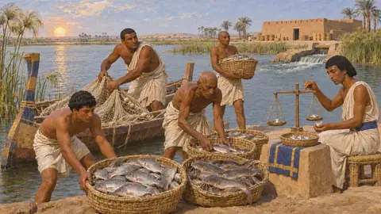
Balıkçı İskelesiAhameniş dünyasının nehirlerinde, bataklıklarında ve denizlerinde balıkçılık, MÖ 6.-4. yüzyıl Dokumacı AtölyesiPers İmparatorluğu genelinde yün ve ketenin eğrilip dokunması, yaklaşık MÖ 550-479
Dokumacı AtölyesiPers İmparatorluğu genelinde yün ve ketenin eğrilip dokunması, yaklaşık MÖ 550-479 Kervan AvlusuAhameniş İmparatorluğu'nda kara ticareti ve yük hayvanlarıyla taşımacılık, yaklaşık MÖ 550-479
Kervan AvlusuAhameniş İmparatorluğu'nda kara ticareti ve yük hayvanlarıyla taşımacılık, yaklaşık MÖ 550-479 Geometrik BahçeAğaçlar ve su kanallarıyla donatılmış duvarlı Pers bahçesi, MÖ 540 dolayları
Geometrik BahçeAğaçlar ve su kanallarıyla donatılmış duvarlı Pers bahçesi, MÖ 540 dolayları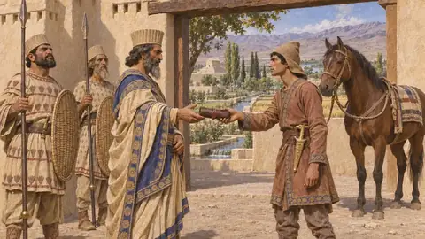
Vali KonağıBir eyaletin ya da bir şehrin kraliyet memurunun makamı, yaklaşık MÖ 550-330 Yapı Ustaları AvlusuSıradan yapıları yükselten tuğlacılar, marangozlar ve işçiler, yaklaşık MÖ 550-480
Yapı Ustaları AvlusuSıradan yapıları yükselten tuğlacılar, marangozlar ve işçiler, yaklaşık MÖ 550-480 Taşçı KampıPersis ve Elam'ın kraliyet konutlarını inşa eden taş işçileri, yaklaşık MÖ 550-480
Taşçı KampıPersis ve Elam'ın kraliyet konutlarını inşa eden taş işçileri, yaklaşık MÖ 550-480 Kyros'un MezarıBüyük Kyros'un Pasargadai'deki beşik çatılı taş mezarı, Persis, yaklaşık MÖ 540-530
Kyros'un MezarıBüyük Kyros'un Pasargadai'deki beşik çatılı taş mezarı, Persis, yaklaşık MÖ 540-530 Kabul SalonuKyros'un S Sarayı olarak bilinen sütunlu salonu, Pasargadai, yaklaşık MÖ 540-530
Kabul SalonuKyros'un S Sarayı olarak bilinen sütunlu salonu, Pasargadai, yaklaşık MÖ 540-530 Konut SarayıPasargadai'deki P Sarayı, MÖ 530'dan önce Kyros döneminde yapımına başlanmış, sonradan tamamlanmış
Konut SarayıPasargadai'deki P Sarayı, MÖ 530'dan önce Kyros döneminde yapımına başlanmış, sonradan tamamlanmış Kraliyet BahçesiPasargadai saraylarının yanında taş su kanallı bahçe, MÖ 540-530 dolayları
Kraliyet BahçesiPasargadai saraylarının yanında taş su kanallı bahçe, MÖ 540-530 dolayları Kralın KabartmasıI. Dareios'un üç dilli kabartması ve yazıtı, Bagastana, yaklaşık MÖ 520
Kralın KabartmasıI. Dareios'un üç dilli kabartması ve yazıtı, Bagastana, yaklaşık MÖ 520 Kraliyet TerasıDareios'un Parsa'daki (Persepolis) saray kentinin taş platformu, yapımına yaklaşık MÖ 518'de başlandı
Kraliyet TerasıDareios'un Parsa'daki (Persepolis) saray kentinin taş platformu, yapımına yaklaşık MÖ 518'de başlandı Dareios'un SarayıI. Dareios'un Elam'daki Susa'da bulunan sarayı ve sütunlu salonu, yapımına yaklaşık MÖ 520-518'de başlanmış
Dareios'un SarayıI. Dareios'un Elam'daki Susa'da bulunan sarayı ve sütunlu salonu, yapımına yaklaşık MÖ 520-518'de başlanmış Sırlı Tuğla FırınıDareios'un Susa'daki sarayı için renkli tuğla kaplamalar yapan atölyeler, yaklaşık MÖ 520-500
Sırlı Tuğla FırınıDareios'un Susa'daki sarayı için renkli tuğla kaplamalar yapan atölyeler, yaklaşık MÖ 520-500 Tekne KöprüsüDareios'un aşağı Tuna üzerinde İon Yunanlılarına kurdurduğu tekne köprüsü, yaklaşık MÖ 513
Tekne KöprüsüDareios'un aşağı Tuna üzerinde İon Yunanlılarına kurdurduğu tekne köprüsü, yaklaşık MÖ 513 İon Gemi UstalarıDareios için İstros'a köprü kuran Yunan gemi tayfaları ve marangozları, yaklaşık MÖ 513
İon Gemi UstalarıDareios için İstros'a köprü kuran Yunan gemi tayfaları ve marangozları, yaklaşık MÖ 513 Kralın OtağıKserkses'in Thermopylai'deki çarpışmaları izlediği kraliyet tahtı, MÖ 480
Kralın OtağıKserkses'in Thermopylai'deki çarpışmaları izlediği kraliyet tahtı, MÖ 480 Nisaia HarasıMedya'daki Nisaia ovasında kraliyet at otlakları, MÖ 6. ila 5. yüzyıl
Nisaia HarasıMedya'daki Nisaia ovasında kraliyet at otlakları, MÖ 6. ila 5. yüzyıl Apis'in GömülmesiSakkara'da kutsal Apis boğalarının kayaya oyulmuş mezar galerileri, Mısır; MÖ 524 tarihli defin
Apis'in GömülmesiSakkara'da kutsal Apis boğalarının kayaya oyulmuş mezar galerileri, Mısır; MÖ 524 tarihli defin Kserkses KanalıKuzey Ege'de Athos berzahını kesen gemi kanalı, yaklaşık MÖ 483-480'de kazıldı
Kserkses KanalıKuzey Ege'de Athos berzahını kesen gemi kanalı, yaklaşık MÖ 483-480'de kazıldı Sardes HisarıSardes'te Lidya krallarının ve Pers satraplarının akropolisi, MÖ 6.-4. yüzyıl
Sardes HisarıSardes'te Lidya krallarının ve Pers satraplarının akropolisi, MÖ 6.-4. yüzyıl Paktolos Altın ArıtımeviLidya'da, Sardes'te Paktolos kıyısında nehir altınını arıtan atölye, MÖ 6. yüzyıl
Paktolos Altın ArıtımeviLidya'da, Sardes'te Paktolos kıyısında nehir altınını arıtan atölye, MÖ 6. yüzyıl Kraliyet DarphanesiKralın okçu figürlü sikkelerini basan atölye, muhtemelen Sardes'te, yaklaşık MÖ 500
Kraliyet DarphanesiKralın okçu figürlü sikkelerini basan atölye, muhtemelen Sardes'te, yaklaşık MÖ 500 Yol MenziliKralın yolları üzerinde memurlar, ulaklar ve askerler için konak yeri, MÖ 500 dolayları
Yol MenziliKralın yolları üzerinde memurlar, ulaklar ve askerler için konak yeri, MÖ 500 dolayları Keşif KarakoluAraziyi ve düşmanı görmek için öne gönderilen atlılar, Ahameniş orduları, MÖ 6-5. yüzyıl
Keşif KarakoluAraziyi ve düşmanı görmek için öne gönderilen atlılar, Ahameniş orduları, MÖ 6-5. yüzyıl İkmal DeposuKserkses'in Trakya ve Makedonya'dan geçen yolu boyunca biriktirilen erzak, yaklaşık MÖ 483-480
İkmal DeposuKserkses'in Trakya ve Makedonya'dan geçen yolu boyunca biriktirilen erzak, yaklaşık MÖ 483-480 Mardonios'un KalesiBoiotia'da Asopos ırmağı kıyısında Pers ahşap kalesi, MÖ 479
Mardonios'un KalesiBoiotia'da Asopos ırmağı kıyısında Pers ahşap kalesi, MÖ 479 Gemi OrdugâhıMarathon Koyu'nda karaya çekilmiş Pers donanması, Attika, MÖ 490
Gemi OrdugâhıMarathon Koyu'nda karaya çekilmiş Pers donanması, Attika, MÖ 490 KışlaAhameniş İmparatorluğu askerlerinin barınması ve ikmali, MÖ 6.-5. yüzyıl
KışlaAhameniş İmparatorluğu askerlerinin barınması ve ikmali, MÖ 6.-5. yüzyıl Okçuluk AlanıPers piyadesinin başlıca silahı olan yay için eğitim alanı, MÖ 6.-5. yüzyıl
Okçuluk AlanıPers piyadesinin başlıca silahı olan yay için eğitim alanı, MÖ 6.-5. yüzyıl Süvari AhırıKralın süvarileri için atların barındırılması ve beslenmesi, Pers İmparatorluğu, MÖ 6.-5. yüzyıl
Süvari AhırıKralın süvarileri için atların barındırılması ve beslenmesi, Pers İmparatorluğu, MÖ 6.-5. yüzyıl Toplanma AlanıPers toplama askerlerinin sayım ve teftiş için toplandığı alan, yaklaşık MÖ 530-479
Toplanma AlanıPers toplama askerlerinin sayım ve teftiş için toplandığı alan, yaklaşık MÖ 530-479 CephanelikKralın silahları için atölyeler ve depolar, Pers İmparatorluğu, yaklaşık MÖ 550-479
CephanelikKralın silahları için atölyeler ve depolar, Pers İmparatorluğu, yaklaşık MÖ 550-479 Gözetleme KulesiYollarda ve sınırlarda gözetleme ve işaret noktası, Pers İmparatorluğu, MÖ 6.-5. yüzyıl
Gözetleme KulesiYollarda ve sınırlarda gözetleme ve işaret noktası, Pers İmparatorluğu, MÖ 6.-5. yüzyıl Savunma DuvarıTaş temeller üzerinde kerpiç duvarlar, Yakın Doğu ve Ege, MÖ 6.-5. yüzyıl
Savunma DuvarıTaş temeller üzerinde kerpiç duvarlar, Yakın Doğu ve Ege, MÖ 6.-5. yüzyıl Eski Athena TapınağıAtina Akropolisi'ndeki Athena Polias Tapınağı, MÖ 480'de Persler tarafından yakıldı
Eski Athena TapınağıAtina Akropolisi'ndeki Athena Polias Tapınağı, MÖ 480'de Persler tarafından yakıldı Ön ParthenonAtina Akropolisi'nde yarım kalmış mermer Athena tapınağı, yaklaşık MÖ 490-480
Ön ParthenonAtina Akropolisi'nde yarım kalmış mermer Athena tapınağı, yaklaşık MÖ 490-480 Hera Kutsal AlanıBoiotia'da Plataia önündeki Hera kutsal bölgesi, MÖ 479 savaşında önemli bir nirengi noktası
Hera Kutsal AlanıBoiotia'da Plataia önündeki Hera kutsal bölgesi, MÖ 479 savaşında önemli bir nirengi noktası Demeter Kutsal BölgesiPlataia savaş alanındaki Eleusisli Demeter kutsal alanı, Boiotia, MÖ 479
Demeter Kutsal BölgesiPlataia savaş alanındaki Eleusisli Demeter kutsal alanı, Boiotia, MÖ 479 Ahşap BarikatAtina Akropolisi girişindeki ahşap barikat, MÖ 480
Ahşap BarikatAtina Akropolisi girişindeki ahşap barikat, MÖ 480 Sunaklar ve HeykellerMÖ 480'de yağmalanan Atina Akropolisi'ndeki adaklar ve küçük tapınaklar
Sunaklar ve HeykellerMÖ 480'de yağmalanan Atina Akropolisi'ndeki adaklar ve küçük tapınaklar Boş EvAtina'nın aşağı şehrinde terk edilmiş bir ev, MÖ 480-479
Boş EvAtina'nın aşağı şehrinde terk edilmiş bir ev, MÖ 480-479 Sestos EviHellespontos kıyısındaki Sestos'ta, Atinalılarca kuşatılan bir ev, MÖ 479-478
Sestos EviHellespontos kıyısındaki Sestos'ta, Atinalılarca kuşatılan bir ev, MÖ 479-478 Athena'nın ZeytiniAtina Akropolisi'nde MÖ 480'de Persler tarafından yakılan kutsal zeytin ağacı
Athena'nın ZeytiniAtina Akropolisi'nde MÖ 480'de Persler tarafından yakılan kutsal zeytin ağacı Kapı BinasıAhameniş dünyasının tahkimli ve törensel kapıları, yaklaşık MÖ 550-479
Kapı BinasıAhameniş dünyasının tahkimli ve törensel kapıları, yaklaşık MÖ 550-479 Gözcü NoktasıAhameniş İmparatorluğu kentlerinde gece nöbeti, yangın ve onarım, MÖ 6.-5. yüzyıl
Gözcü NoktasıAhameniş İmparatorluğu kentlerinde gece nöbeti, yangın ve onarım, MÖ 6.-5. yüzyıl Dağlı Akıncı KampıPersis ve Zagros'un dağ halklarının ordugâhı, MÖ 6.-5. yüzyıl
Dağlı Akıncı KampıPersis ve Zagros'un dağ halklarının ordugâhı, MÖ 6.-5. yüzyıl Nehir BasamaklarıNil kıyısında yıkanma ve çamaşır yıkama iskelesi, Memfis, yaklaşık MÖ 525
Nehir BasamaklarıNil kıyısında yıkanma ve çamaşır yıkama iskelesi, Memfis, yaklaşık MÖ 525 Çeşme EviYunan kentlerinin üstü örtülü kamu çeşmesi, MÖ 6. ila 5. yüzyıl
Çeşme EviYunan kentlerinin üstü örtülü kamu çeşmesi, MÖ 6. ila 5. yüzyıl NekropolMemfis'in batı çöl kenarındaki mezarlıklar, Mısır, MÖ 525-524'teki hâliyle
NekropolMemfis'in batı çöl kenarındaki mezarlıklar, Mısır, MÖ 525-524'teki hâliyle Kraliyet TümülüsüSardes'in kuzeyinde, Bin Tepe'deki Lidya mezar höyükleri, MÖ 7. ila 4. yüzyıl
Kraliyet TümülüsüSardes'in kuzeyinde, Bin Tepe'deki Lidya mezar höyükleri, MÖ 7. ila 4. yüzyıl Yol Kenarındaki MezarlıkKent surlarının dışındaki Yunan yol kenarı mezarlıkları, Attika ve Boiotia, yaklaşık MÖ 600-479
Yol Kenarındaki MezarlıkKent surlarının dışındaki Yunan yol kenarı mezarlıkları, Attika ve Boiotia, yaklaşık MÖ 600-479 Mezar HöyüğüÖlülerin üzerine yığılan toprak höyük, Athos'ta rastlanan bir Trak geleneği, MÖ 483-480
Mezar HöyüğüÖlülerin üzerine yığılan toprak höyük, Athos'ta rastlanan bir Trak geleneği, MÖ 483-480 Fenike TersanesiKral'ın donanmasının Fenikeli gemi yapımcıları, Sidon ve Tyros, yaklaşık MÖ 525-479
Fenike TersanesiKral'ın donanmasının Fenikeli gemi yapımcıları, Sidon ve Tyros, yaklaşık MÖ 525-479 HurmalıkMemfis çevresinde, Nil taşkın ovasındaki hurmalıklar, Mısır, MÖ 525 civarı
HurmalıkMemfis çevresinde, Nil taşkın ovasındaki hurmalıklar, Mısır, MÖ 525 civarı ZeytinlikYunanistan ve Ege kıyılarının zeytinlikleri ve yağ presleri, yaklaşık MÖ 490-479
ZeytinlikYunanistan ve Ege kıyılarının zeytinlikleri ve yağ presleri, yaklaşık MÖ 490-479 Yunan CerrahhanesiBir Yunan hekiminin çalışma odası, Yunan dünyası, yaklaşık MÖ 520-479
Yunan CerrahhanesiBir Yunan hekiminin çalışma odası, Yunan dünyası, yaklaşık MÖ 520-479 Magosların SunağıBaşka bir halkın şehrindeki Persler için açık hava sunağı
Magosların SunağıBaşka bir halkın şehrindeki Persler için açık hava sunağı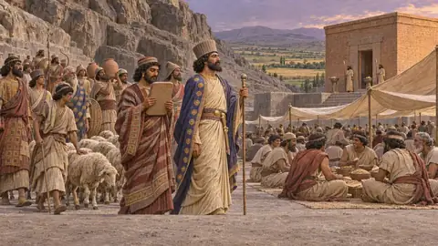
Halkların tapınaklarıKralın öteki tanrıları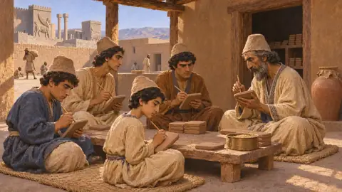
Kâtip OkuluPers İmparatorluğu'nda ve komşularında kâtip yetiştirme, MÖ 6-5. yüzyıl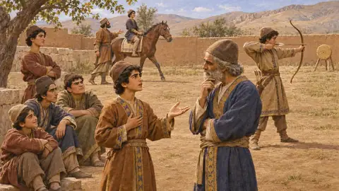
Gençlerin Talim AlanıYunan anlatılarında Pers oğlanlarının yetiştirilmesi, MÖ 5-4. yüzyıl ve sonrasıAskerler ve gemiler 51
 Pers MızrakçıAhameniş Kralı'nın ordusunda piyade, yaklaşık MÖ 550-479
Pers MızrakçıAhameniş Kralı'nın ordusunda piyade, yaklaşık MÖ 550-479 Pers OkçuAhameniş Pers ordusunun yaylı piyadesi, yaklaşık MÖ 550-479
Pers OkçuAhameniş Pers ordusunun yaylı piyadesi, yaklaşık MÖ 550-479 Pers AtlıAhameniş Kralı'nın ordusundaki atlı askerler, MÖ 6.-5. yüzyıllar
Pers AtlıAhameniş Kralı'nın ordusundaki atlı askerler, MÖ 6.-5. yüzyıllar Keşif AtlısıKralın ordularının atlı keşifçileri, MÖ 6-5. yüzyıl
Keşif AtlısıKralın ordularının atlı keşifçileri, MÖ 6-5. yüzyıl Toplama MızrakçıAhameniş Kralı'nın ordusu için yükümlülük gereği toplanan yaya asker, yaklaşık MÖ 550-479
Toplama MızrakçıAhameniş Kralı'nın ordusu için yükümlülük gereği toplanan yaya asker, yaklaşık MÖ 550-479 Toplama OkçuPers Kralı'nın ordusu için kraliyet toplamasıyla alınmış yaycı, MÖ 6.-5. yüzyıl
Toplama OkçuPers Kralı'nın ordusu için kraliyet toplamasıyla alınmış yaycı, MÖ 6.-5. yüzyıl Kralın MızrakçısıKraliyet ordusunun ve muhafızlarının Pers piyadesi, MÖ yaklaşık 530-479
Kralın MızrakçısıKraliyet ordusunun ve muhafızlarının Pers piyadesi, MÖ yaklaşık 530-479 ÖlümsüzHerodotos'un betimlediği biçimiyle on bin kişilik seçkin Pers piyadesi, MÖ 480
ÖlümsüzHerodotos'un betimlediği biçimiyle on bin kişilik seçkin Pers piyadesi, MÖ 480 Saka OkçuAhameniş ordusunda Orta Asya'nın Saka halklarından yaycı, yaklaşık MÖ 520-479
Saka OkçuAhameniş ordusunda Orta Asya'nın Saka halklarından yaycı, yaklaşık MÖ 520-479 Med Atlı OkçuAhameniş ordusunda Medyalı atlı okçu, yaklaşık MÖ 550-479
Med Atlı OkçuAhameniş ordusunda Medyalı atlı okçu, yaklaşık MÖ 550-479 Arap Deve SüvarisiPers Kralının ordusunda deveye binen Arap okçular, yak. MÖ 525-479
Arap Deve SüvarisiPers Kralının ordusunda deveye binen Arap okçular, yak. MÖ 525-479 Kissialı MızrakçıKserkses'in ordusunda Susa ve ovasından gelen piyade, MÖ 480
Kissialı MızrakçıKserkses'in ordusunda Susa ve ovasından gelen piyade, MÖ 480 Baktriyalı MızrakçıPers kraliyet ordusunda Baktriyalı piyade, yaklaşık MÖ 520-479
Baktriyalı MızrakçıPers kraliyet ordusunda Baktriyalı piyade, yaklaşık MÖ 520-479 Fenikeli Deniz PiyadesiKral'ın donanmasındaki Fenike gemilerinin savaşçısı, MÖ 525-479 dolayları
Fenikeli Deniz PiyadesiKral'ın donanmasındaki Fenike gemilerinin savaşçısı, MÖ 525-479 dolayları Mısırlı Deniz PiyadesiKserkses'in donanmasındaki Mısır filosunun silahlı savaşçıları, MÖ 480-479
Mısırlı Deniz PiyadesiKserkses'in donanmasındaki Mısır filosunun silahlı savaşçıları, MÖ 480-479 Hintli Okçuİndus vadisindeki Ahameniş eyaleti Hinduş'tan yaycı, yaklaşık MÖ 515-479
Hintli Okçuİndus vadisindeki Ahameniş eyaleti Hinduş'tan yaycı, yaklaşık MÖ 515-479 Kralın OkçusuKralın ordusunun eğitimli Pers okçusu, Persis, yaklaşık MÖ 550-479
Kralın OkçusuKralın ordusunun eğitimli Pers okçusu, Persis, yaklaşık MÖ 550-479 Kralın AtlısıKral'ın yakınında at süren seçkin Pers süvarileri, MÖ yaklaşık 530-479
Kralın AtlısıKral'ın yakınında at süren seçkin Pers süvarileri, MÖ yaklaşık 530-479 Kralın Atlı OkçusuAhameniş kraliyet ordusunun atlı okçuları, yaklaşık MÖ 550-479
Kralın Atlı OkçusuAhameniş kraliyet ordusunun atlı okçuları, yaklaşık MÖ 550-479 Pers Örtülü KoçbaşıDuvar ve kapı yıkmakta kullanılan çatılı koçbaşı, Yakındoğu, MÖ 9.-5. yüzyıllar
Pers Örtülü KoçbaşıDuvar ve kapı yıkmakta kullanılan çatılı koçbaşı, Yakındoğu, MÖ 9.-5. yüzyıllar HazarapatişPers 'bin kişinin komutanı'; subay rütbesi ve saray makamı, MÖ 6.-5. yüzyıl
HazarapatişPers 'bin kişinin komutanı'; subay rütbesi ve saray makamı, MÖ 6.-5. yüzyıl Dağlı Akıncıİmparatorluğun dağlarından ve uç bölgelerinden gelen hafif silahlı akıncılar, MÖ 6.-5. yüzyıl
Dağlı Akıncıİmparatorluğun dağlarından ve uç bölgelerinden gelen hafif silahlı akıncılar, MÖ 6.-5. yüzyıl Karyalı Paralı AskerMısır krallarınca tutulan ve Perslere karşı savaşan Karyalı askerler, yaklaşık MÖ 664-494
Karyalı Paralı AskerMısır krallarınca tutulan ve Perslere karşı savaşan Karyalı askerler, yaklaşık MÖ 664-494 Yunan Paralı HoplitÇoğunlukla Mısır hizmetinde çalışan paralı Yunan ağır piyadesi, yaklaşık MÖ 664-525
Yunan Paralı HoplitÇoğunlukla Mısır hizmetinde çalışan paralı Yunan ağır piyadesi, yaklaşık MÖ 664-525 Örtülü KoçbaşıSurları yarmak için üstü örtülü koçbaşı; Yakın Doğu'da MÖ 530'dan çok önce kullanılıyordu
Örtülü KoçbaşıSurları yarmak için üstü örtülü koçbaşı; Yakın Doğu'da MÖ 530'dan çok önce kullanılıyordu LağımcıAhameniş çağının kuşatmalarında kent surlarının altını kazan askerler, MÖ 6.-5. yy.
LağımcıAhameniş çağının kuşatmalarında kent surlarının altını kazan askerler, MÖ 6.-5. yy. Kuşatma MerdiveniKent surlarına tırmanmak için kuşatma merdiveni; Yakın Doğu ve Yunanistan, MÖ 9.-5. yüzyıllar
Kuşatma MerdiveniKent surlarına tırmanmak için kuşatma merdiveni; Yakın Doğu ve Yunanistan, MÖ 9.-5. yüzyıllar Kuşatma KulesiSurlara saldırmak için tekerlekli ahşap makine, Yakın Doğu ve Yunanistan, MÖ 9.-4. yüzyıl
Kuşatma KulesiSurlara saldırmak için tekerlekli ahşap makine, Yakın Doğu ve Yunanistan, MÖ 9.-4. yüzyıl Toprak TaşıyıcıŞehir surlarına karşı kuşatma rampaları yığan adamlar, Yakındoğu ve Ege, MÖ 479'a dek
Toprak TaşıyıcıŞehir surlarına karşı kuşatma rampaları yığan adamlar, Yakındoğu ve Ege, MÖ 479'a dek Dağlı Savaş ReisiPersis ve sınır bölgelerindeki dağlı halkların önderi, MÖ 6.-4. yüzyıllar
Dağlı Savaş ReisiPersis ve sınır bölgelerindeki dağlı halkların önderi, MÖ 6.-4. yüzyıllar Dağların Ulu ReisiZagros ve Persis dağ halklarının hayalî savaş önderi, yaklaşık MÖ 530-479
Dağların Ulu ReisiZagros ve Persis dağ halklarının hayalî savaş önderi, yaklaşık MÖ 530-479 Dağlı Atlı OkçuOyunda Kral'ın düşmanları arasındaki atlı okçu, yaklaşık MÖ 530-479
Dağlı Atlı OkçuOyunda Kral'ın düşmanları arasındaki atlı okçu, yaklaşık MÖ 530-479 Savaş DavulcusuKuşatmada Kral'ın düşmanlarının işaretçisi, MÖ 530-479 için bir oyun figürü
Savaş DavulcusuKuşatmada Kral'ın düşmanlarının işaretçisi, MÖ 530-479 için bir oyun figürü Dağlı OkçuZagros ve Persis yaylalarının yaycıları, yaklaşık MÖ 550-479
Dağlı OkçuZagros ve Persis yaylalarının yaycıları, yaklaşık MÖ 550-479 Yunan hoplitleriYunan şehirlerinin zırhlı yurttaş mızrakçıları; Kralın hem düşmanları hem tebaası, MÖ 499-479
Yunan hoplitleriYunan şehirlerinin zırhlı yurttaş mızrakçıları; Kralın hem düşmanları hem tebaası, MÖ 499-479 Spartalı askerlerMÖ 480-479'da Thermopylai ve Plataia'da Perslerle karşılaşan Sparta hoplitleri
Spartalı askerlerMÖ 480-479'da Thermopylai ve Plataia'da Perslerle karşılaşan Sparta hoplitleri Yunan okçular ve hafif birliklerYunan ordularında yaycılar, sapancılar ve hafif silahlı askerler, yaklaşık MÖ 499-479
Yunan okçular ve hafif birliklerYunan ordularında yaycılar, sapancılar ve hafif silahlı askerler, yaklaşık MÖ 499-479 Yunan atlılarYunan devletlerinin süvarisi; en güçlüsü Tesalya ve Boiotia'da, yaklaşık MÖ 550-479
Yunan atlılarYunan devletlerinin süvarisi; en güçlüsü Tesalya ve Boiotia'da, yaklaşık MÖ 550-479 Yunan komutanlarPerslere karşı Atina ve İon kentlerinin komutanları, MÖ 499-490
Yunan komutanlarPerslere karşı Atina ve İon kentlerinin komutanları, MÖ 499-490 Mısırlı askerlerSais dönemi Mısır'ının yerli savaşçıları; MÖ 525'te Pelusion'da Kambyses'e yenildiler
Mısırlı askerlerSais dönemi Mısır'ının yerli savaşçıları; MÖ 525'te Pelusion'da Kambyses'e yenildiler Libyalı süvarilerMısır'ın batısında at ve savaş arabası kullanan, MÖ 525'ten itibaren Pers İmparatorluğu'na tabi halklar
Libyalı süvarilerMısır'ın batısında at ve savaş arabası kullanan, MÖ 525'ten itibaren Pers İmparatorluğu'na tabi halklar Elamlı asilerElam'da I. Dareios'a karşı çıkan, Behistun'da kayda geçmiş ayaklanmalar, MÖ 522-519
Elamlı asilerElam'da I. Dareios'a karşı çıkan, Behistun'da kayda geçmiş ayaklanmalar, MÖ 522-519 Med asilerMedya'nın Dareios'a karşı ayaklanmasında Fravartiş'in taraftarları, MÖ 522-521
Med asilerMedya'nın Dareios'a karşı ayaklanmasında Fravartiş'in taraftarları, MÖ 522-521 Vahyazdata'nın asileriDareios'a karşı ikinci bir sahte Bardiya'nın ardından giden Pers askerleri, Persis, MÖ 521
Vahyazdata'nın asileriDareios'a karşı ikinci bir sahte Bardiya'nın ardından giden Pers askerleri, Persis, MÖ 521 İskit savaşçılarıDareios'un ordusuyla karşılaşan Pontus bozkırının göçebe atlıları, MÖ yaklaşık 513
İskit savaşçılarıDareios'un ordusuyla karşılaşan Pontus bozkırının göçebe atlıları, MÖ yaklaşık 513 Trak savaşçılarıTrakya'nın kabile savaşçıları, Kralın tebaası ve askerleri, yaklaşık MÖ 513-479
Trak savaşçılarıTrakya'nın kabile savaşçıları, Kralın tebaası ve askerleri, yaklaşık MÖ 513-479 Tebaa halklarının toplama askerleriAhameniş İmparatorluğu halklarından toplanan birlikler, yaklaşık MÖ 530-479
Tebaa halklarının toplama askerleriAhameniş İmparatorluğu halklarından toplanan birlikler, yaklaşık MÖ 530-479 TriremePers ve Yunan donanmalarının üç sıra kürekli savaş gemisi, yaklaşık MÖ 525-479
TriremePers ve Yunan donanmalarının üç sıra kürekli savaş gemisi, yaklaşık MÖ 525-479 PentekonterYunan ve Fenike elli kürekli savaş gemisi ve uzun yol teknesi, yaklaşık MÖ 700-480
PentekonterYunan ve Fenike elli kürekli savaş gemisi ve uzun yol teknesi, yaklaşık MÖ 700-480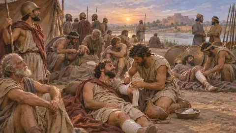
Sahra HekimiPers çağının ordu hekimleri, MÖ 6-5. yüzyıl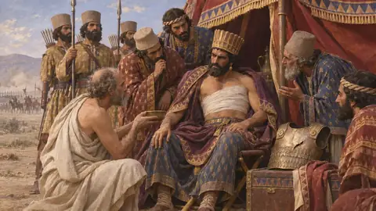
Kralın HekimiKralın ordusuyla yürüyen hekimlerHalk 87
 AstyagesMedlerin son kralı, yaklaşık MÖ 550'ye dek Ekbatana'dan hüküm sürdü
AstyagesMedlerin son kralı, yaklaşık MÖ 550'ye dek Ekbatana'dan hüküm sürdü Büyük KyrosAnşan Kralı ve Pers İmparatorluğu'nun kurucusu, hüküm süresi yaklaşık MÖ 559-530
Büyük KyrosAnşan Kralı ve Pers İmparatorluğu'nun kurucusu, hüküm süresi yaklaşık MÖ 559-530 HarpagosKyros'a hizmet eden ve batı Anadolu'yu fetheden Medli soylu, MÖ 550-540 dolayları
HarpagosKyros'a hizmet eden ve batı Anadolu'yu fetheden Medli soylu, MÖ 550-540 dolayları KroisosLidya'nın son Mermnad kralı, yaklaşık MÖ 560-547 arasında Sardes'ten hüküm sürdü
KroisosLidya'nın son Mermnad kralı, yaklaşık MÖ 560-547 arasında Sardes'ten hüküm sürdü TomyrisMÖ 530'da Büyük Kyros'la savaşan Orta Asyalı Massagetlerin kraliçesi
TomyrisMÖ 530'da Büyük Kyros'la savaşan Orta Asyalı Massagetlerin kraliçesi HystaspesAhameniş soyundan Pers soylusu ve I. Dareios'un babası, MÖ 6. yüzyıl
HystaspesAhameniş soyundan Pers soylusu ve I. Dareios'un babası, MÖ 6. yüzyıl KambysesKyros'un oğlu, MÖ 530-522 arası Pers kralı ve Mısır'ın fatihi
KambysesKyros'un oğlu, MÖ 530-522 arası Pers kralı ve Mısır'ın fatihi III. PsamtikMısır'ın 26. hanedanının son firavunu, yaklaşık MÖ 526-525 arasında hüküm sürdü
III. PsamtikMısır'ın 26. hanedanının son firavunu, yaklaşık MÖ 526-525 arasında hüküm sürdü UdjahorresnetMısırlı donanma komutanı, hekim ve Sais rahibi, MÖ 6. yüzyıl
UdjahorresnetMısırlı donanma komutanı, hekim ve Sais rahibi, MÖ 6. yüzyıl Bardiya ya da GaumataMÖ 522'de birkaç ay Perslerin kralı, Kyros'un oğlu ya da bir sahtekâr
Bardiya ya da GaumataMÖ 522'de birkaç ay Perslerin kralı, Kyros'un oğlu ya da bir sahtekâr Büyük DareiosPers İmparatorluğu'nun kralı, Hystaspes'in oğlu, MÖ 522-486 arasında hüküm sürdü
Büyük DareiosPers İmparatorluğu'nun kralı, Hystaspes'in oğlu, MÖ 522-486 arasında hüküm sürdü FravartişDareios'a karşı Medya tahtında hak iddia eden Medli asi, MÖ 522-521
FravartişDareios'a karşı Medya tahtında hak iddia eden Medli asi, MÖ 522-521 VahyazdataKyros'un oğlu Bardiya olduğunu ileri süren Pers taht iddiacısı, Persis, MÖ 522-521
VahyazdataKyros'un oğlu Bardiya olduğunu ileri süren Pers taht iddiacısı, Persis, MÖ 522-521 ArahaBabil'i IV. Nabukadnezar adıyla yöneten Armenialı asi, MÖ 521
ArahaBabil'i IV. Nabukadnezar adıyla yöneten Armenialı asi, MÖ 521 GobryasPers soylusu, I. Dareios'un yardımcısı ve akrabası, MÖ 6. yüzyılın sonu
GobryasPers soylusu, I. Dareios'un yardımcısı ve akrabası, MÖ 6. yüzyılın sonu AthamaitaI. Dareios'a karşı ayaklanan Elamlı asi önder, Elam, yaklaşık MÖ 520-519
AthamaitaI. Dareios'a karşı ayaklanan Elamlı asi önder, Elam, yaklaşık MÖ 520-519 AtossaPers kraliçesi, Kyros'un kızı ve Kserkses'in annesi, MÖ 6. yüzyılın sonu-5. yüzyılın başı
AtossaPers kraliçesi, Kyros'un kızı ve Kserkses'in annesi, MÖ 6. yüzyılın sonu-5. yüzyılın başı Samoslu MandroklesDareios için Bosporos'a köprü kuran Samoslu Yunan mühendis, MÖ 513 dolayları
Samoslu MandroklesDareios için Bosporos'a köprü kuran Samoslu Yunan mühendis, MÖ 513 dolayları Karyandalı SkylaksMÖ 6. yüzyıl sonlarında Dareios tarafından İndus'tan aşağı gönderilen Karyalı deniz kaptanı
Karyandalı SkylaksMÖ 6. yüzyıl sonlarında Dareios tarafından İndus'tan aşağı gönderilen Karyalı deniz kaptanı Miletli HistiaiosDareios döneminde Milet'in Yunan tiranı, İstros köprüsünün bekçisi, MÖ 494 ya da 493'te öldü
Miletli HistiaiosDareios döneminde Milet'in Yunan tiranı, İstros köprüsünün bekçisi, MÖ 494 ya da 493'te öldü Miletli AristagorasMilet'in vekil tiranı ve İon isyanının önderi, MÖ 497 dolaylarında öldü
Miletli AristagorasMilet'in vekil tiranı ve İon isyanının önderi, MÖ 497 dolaylarında öldü KleomenesAgiad soyundan Sparta kralı, yak. MÖ 520-490
KleomenesAgiad soyundan Sparta kralı, yak. MÖ 520-490 ArtaphernesDareios'un kardeşi ve yaklaşık MÖ 513'ten itibaren Sardes satrabı; MÖ 490'daki komutanın babası
ArtaphernesDareios'un kardeşi ve yaklaşık MÖ 513'ten itibaren Sardes satrabı; MÖ 490'daki komutanın babası Medli DatisI. Dareios'un Medli komutanı, MÖ 490 seferinin başkomutanı
Medli DatisI. Dareios'un Medli komutanı, MÖ 490 seferinin başkomutanı HippiasYaklaşık MÖ 527-510 arasında Atina tiranı, sonradan Perslere sığınan bir sürgün
HippiasYaklaşık MÖ 527-510 arasında Atina tiranı, sonradan Perslere sığınan bir sürgün PheidippidesMÖ 490'da Marathon öncesinde Sparta'ya gönderilen Atinalı uzun mesafe koşucusu
PheidippidesMÖ 490'da Marathon öncesinde Sparta'ya gönderilen Atinalı uzun mesafe koşucusu MiltiadesAtinalı soylu, Khersonesos'ta Pers vasalı, Marathon'da komutan; MÖ 489 dolaylarında öldü
MiltiadesAtinalı soylu, Khersonesos'ta Pers vasalı, Marathon'da komutan; MÖ 489 dolaylarında öldü KallimakhosAphidnalı Atinalı polemarkhos; MÖ 490'da Marathon'da öldü
KallimakhosAphidnalı Atinalı polemarkhos; MÖ 490'da Marathon'da öldü MardoniosPers komutanı, Gobryas'ın oğlu ve Dareios'un damadı, MÖ 479'da Plataia'da öldü
MardoniosPers komutanı, Gobryas'ın oğlu ve Dareios'un damadı, MÖ 479'da Plataia'da öldü KserksesPers İmparatorluğu'nun Kralı, Dareios ile Atossa'nın oğlu, hüküm süresi MÖ 486-465
KserksesPers İmparatorluğu'nun Kralı, Dareios ile Atossa'nın oğlu, hüküm süresi MÖ 486-465 BubaresPers soylusu, Megabazos'un oğlu, Athos kanalının gözetmeni, yaklaşık MÖ 483-480
BubaresPers soylusu, Megabazos'un oğlu, Athos kanalının gözetmeni, yaklaşık MÖ 483-480 ArtakhaiesPers soylusu, Athos kanalının gözetmeni, MÖ 480'de Akanthos'ta öldü
ArtakhaiesPers soylusu, Athos kanalının gözetmeni, MÖ 480'de Akanthos'ta öldü LeonidasAgiad soyundan Sparta kralı ve Thermopylai'deki komutan, MÖ 480'de öldü
LeonidasAgiad soyundan Sparta kralı ve Thermopylai'deki komutan, MÖ 480'de öldü DemaratosEurypontid hanedanından Sparta kralı, sonradan Pers sarayında sürgün, yaklaşık MÖ 515-480
DemaratosEurypontid hanedanından Sparta kralı, sonradan Pers sarayında sürgün, yaklaşık MÖ 515-480 Malisli EfialtesMÖ 480'de Thermopylai'de Kserkses'in askerlerine dağ yolunu gösteren Malisli Yunan
Malisli EfialtesMÖ 480'de Thermopylai'de Kserkses'in askerlerine dağ yolunu gösteren Malisli Yunan HydarnesPers komutanı, Thermopylai'de Ölümsüzlerin başı, MÖ 480
HydarnesPers komutanı, Thermopylai'de Ölümsüzlerin başı, MÖ 480 DienekesMÖ 480'de Thermopylai'de düşen Spartalı asker
DienekesMÖ 480'de Thermopylai'de düşen Spartalı asker Makedonyalı AleksandrosMakedonya Kralı ve Pers Kralı'nın tebaası, hüküm süresi yaklaşık MÖ 498-454
Makedonyalı AleksandrosMakedonya Kralı ve Pers Kralı'nın tebaası, hüküm süresi yaklaşık MÖ 498-454 MasistiosMardonios'un emrinde Pers süvari komutanı, MÖ 479'da Boiotia'da Erythrai yakınlarında öldürüldü
MasistiosMardonios'un emrinde Pers süvari komutanı, MÖ 479'da Boiotia'da Erythrai yakınlarında öldürüldü ArtabazosKserkses'in emrinde Pers komutanı, sonradan Daskyleion satrabı, MÖ 480'den itibaren etkin
ArtabazosKserkses'in emrinde Pers komutanı, sonradan Daskyleion satrabı, MÖ 480'den itibaren etkin Phokaialı DionysiosLade savaşından önce İon donanmasını eğiten Phokaialı komutan, MÖ 494
Phokaialı DionysiosLade savaşından önce İon donanmasını eğiten Phokaialı komutan, MÖ 494 AriabignesPers prensi ve Kserkses donanmasının amirali, MÖ 480'de Salamis'te öldürüldü
AriabignesPers prensi ve Kserkses donanmasının amirali, MÖ 480'de Salamis'te öldürüldü AkhaimenesDareios'un oğlu, Mısır satrabı ve Kserkses'in amirali; MÖ 460 dolaylarında öldü
AkhaimenesDareios'un oğlu, Mısır satrabı ve Kserkses'in amirali; MÖ 460 dolaylarında öldü Halikarnassoslu ArtemisiaHalikarnassos hükümdarı ve Kserkses'in donanmasında komutan, MÖ 480
Halikarnassoslu ArtemisiaHalikarnassos hükümdarı ve Kserkses'in donanmasında komutan, MÖ 480 PausaniasMÖ 479'da Plataia'da Yunan ordusuna komuta eden Spartalı naip; MÖ 470 dolaylarında öldü
PausaniasMÖ 479'da Plataia'da Yunan ordusuna komuta eden Spartalı naip; MÖ 470 dolaylarında öldü ThemistoklesSalamis'te Atina gemilerine komuta eden Atinalı devlet adamı; MÖ 459 dolaylarında öldü
ThemistoklesSalamis'te Atina gemilerine komuta eden Atinalı devlet adamı; MÖ 459 dolaylarında öldü Aristeides"Adil" lakaplı Atinalı devlet adamı ve komutan; MÖ 467 dolaylarında öldü
Aristeides"Adil" lakaplı Atinalı devlet adamı ve komutan; MÖ 467 dolaylarında öldü EurybiadesMÖ 480'de Artemision ve Salamis'te Yunan müttefik donanmasının Spartalı komutanı
EurybiadesMÖ 480'de Artemision ve Salamis'te Yunan müttefik donanmasının Spartalı komutanı LeotykhidesEurypontid hanedanından Sparta kralı, yaklaşık MÖ 491-469, MÖ 479'da Mykale'de Yunan komutanı
LeotykhidesEurypontid hanedanından Sparta kralı, yaklaşık MÖ 491-469, MÖ 479'da Mykale'de Yunan komutanı KsanthipposAtinalı siyasetçi ve komutan; MÖ 479'da Mykale'de ve Sestos'ta komuta etti
KsanthipposAtinalı siyasetçi ve komutan; MÖ 479'da Mykale'de ve Sestos'ta komuta etti TigranesAhameniş soylusu, Medlerin ve Mykale'deki ordunun komutanı, ö. MÖ 479
TigranesAhameniş soylusu, Medlerin ve Mykale'deki ordunun komutanı, ö. MÖ 479 Halikarnassoslu PhanesMısır'ı bırakıp Kambyses'e geçen Yunan paralı asker subayı, MÖ 526-525 dolayları
Halikarnassoslu PhanesMısır'ı bırakıp Kambyses'e geçen Yunan paralı asker subayı, MÖ 526-525 dolayları Büyük İskenderAhameniş İmparatorluğu'nu fetheden Makedonya Kralı, MÖ 336-323
Büyük İskenderAhameniş İmparatorluğu'nu fetheden Makedonya Kralı, MÖ 336-323 NabonidusBabil'in son yerli kralı, MÖ 556-539 arasında hüküm sürdü, Kyros tarafından tahttan indirildi
NabonidusBabil'in son yerli kralı, MÖ 556-539 arasında hüküm sürdü, Kyros tarafından tahttan indirildi MazaresKyros'un, yaklaşık MÖ 546'da Sardes'te Paktyes'in isyanını bastıran Med generali
MazaresKyros'un, yaklaşık MÖ 546'da Sardes'te Paktyes'in isyanını bastıran Med generali AryandesDareios döneminde Mısır'ın Pers satrapı; MÖ 518'den sonra idam edildi
AryandesDareios döneminde Mısır'ın Pers satrapı; MÖ 518'den sonra idam edildi Intaphernes (Vindafarna)Dareios'un Pers soylusu ve generali, yedi suikastçıdan biri, MÖ 522-521
Intaphernes (Vindafarna)Dareios'un Pers soylusu ve generali, yedi suikastçıdan biri, MÖ 522-521 DadarşişMÖ 521'deki Armenia savaşında Dareios'un hizmetkârı ve komutanı
DadarşişMÖ 521'deki Armenia savaşında Dareios'un hizmetkârı ve komutanı VaumisaMÖ 522-521'de Dareios adına Armenialı asilere karşı savaşan Pers komutanı
VaumisaMÖ 522-521'de Dareios adına Armenialı asilere karşı savaşan Pers komutanı Nidintu-BelNabukadnezar adını alıp MÖ 522'de Dareios'a karşı ayaklanan Babilli
Nidintu-BelNabukadnezar adını alıp MÖ 522'de Dareios'a karşı ayaklanan Babilli SkunhaDareios'un yakalayıp Behistun kabartmasına eklettiği Saka reisi, muhtemelen MÖ 520'den sonra
SkunhaDareios'un yakalayıp Behistun kabartmasına eklettiği Saka reisi, muhtemelen MÖ 520'den sonra Salamisli OnesilosKıbrıs ayaklanmasının Kıbrıslı önderi, yaklaşık MÖ 497'de Salamis yakınlarında savaşta öldürüldü
Salamisli OnesilosKıbrıs ayaklanmasının Kıbrıslı önderi, yaklaşık MÖ 497'de Salamis yakınlarında savaşta öldürüldü MegabatesYaklaşık MÖ 500'de Naksos'a gönderilen donanmanın Pers komutanı
MegabatesYaklaşık MÖ 500'de Naksos'a gönderilen donanmanın Pers komutanı MegabazosYaklaşık MÖ 513'te Dareios'un İskit seferinin ardından Avrupa'daki Pers generali
MegabazosYaklaşık MÖ 513'te Dareios'un İskit seferinin ardından Avrupa'daki Pers generali IdanthyrsosMÖ 513 civarında Dareios'un İstros'un kuzeyindeki seferiyle karşılaşan İskit kralı
IdanthyrsosMÖ 513 civarında Dareios'un İstros'un kuzeyindeki seferiyle karşılaşan İskit kralı Mytileneli KoesDareios'un hizmetinde İstros'ta bulunan Yunan komutan, yaklaşık MÖ 513
Mytileneli KoesDareios'un hizmetinde İstros'ta bulunan Yunan komutan, yaklaşık MÖ 513 PaktyesSardes'in düşüşünden sonra, muhtemelen MÖ 546-545 civarında isyan eden Lidyalı
PaktyesSardes'in düşüşünden sonra, muhtemelen MÖ 546-545 civarında isyan eden Lidyalı ZopyrosHerodotos'un Babil'in yeniden ele geçirilişini anlatan hikâyesindeki Pers soylusu, yaklaşık MÖ 521
ZopyrosHerodotos'un Babil'in yeniden ele geçirilişini anlatan hikâyesindeki Pers soylusu, yaklaşık MÖ 521 ArtayktesHellespontos kıyısındaki Sestos'un Pers valisi, MÖ 479 veya 478'de Atinalılar tarafından idam edildi
ArtayktesHellespontos kıyısındaki Sestos'un Pers valisi, MÖ 479 veya 478'de Atinalılar tarafından idam edildi OiobazosMÖ 479'da Sestos'ta köprü halatlarını elinde tutan ve Trakya'da ölen Pers
OiobazosMÖ 479'da Sestos'ta köprü halatlarını elinde tutan ve Trakya'da ölen Pers ArtaintesMÖ 479'da Mykale yenilgisinden kaçmayı başaran Pers donanma komutanı
ArtaintesMÖ 479'da Mykale yenilgisinden kaçmayı başaran Pers donanma komutanı LykidasMardonios'un şartlarını kabul etmeyi önerdiği için Salamis'te taşlanarak öldürülen Atinalı meclis üyesi, MÖ 479
LykidasMardonios'un şartlarını kabul etmeyi önerdiği için Salamis'te taşlanarak öldürülen Atinalı meclis üyesi, MÖ 479 Korintli AdeimantosMÖ 480'de Artemision ve Salamis'te Korinthoslu deniz komutanı
Korintli AdeimantosMÖ 480'de Artemision ve Salamis'te Korinthoslu deniz komutanı PheretimePerslerden yardım isteyen ve yaklaşık MÖ 515'te Barka'da oğlunun intikamını alan bir Kyrene kralının annesi
PheretimePerslerden yardım isteyen ve yaklaşık MÖ 515'te Barka'da oğlunun intikamını alan bir Kyrene kralının annesi II. AmasisMÖ 570-526 arasında hüküm süren Mısır Firavunu; ölümü Pers fethinden önce gerçekleşti
II. AmasisMÖ 570-526 arasında hüküm süren Mısır Firavunu; ölümü Pers fethinden önce gerçekleşti MardontesKserkses'in ordusunda görev yapan ve MÖ 479'da Mykale'de öldürülen Pers komutanı
MardontesKserkses'in ordusunda görev yapan ve MÖ 479'da Mykale'de öldürülen Pers komutanı UgbaruKyros adına Babil'i alan Gutium valisi, MÖ 539
UgbaruKyros adına Babil'i alan Gutium valisi, MÖ 539 VivanaDareios döneminde Arakhosia satrapı; yaklaşık MÖ 521'de orada bir asi orduyla savaştı
VivanaDareios döneminde Arakhosia satrapı; yaklaşık MÖ 521'de orada bir asi orduyla savaştı ArtavardiyaDareios'un Persis'te Vahyazdata'ya karşı görevlendirdiği Pers komutanı, MÖ 522-521
ArtavardiyaDareios'un Persis'te Vahyazdata'ya karşı görevlendirdiği Pers komutanı, MÖ 522-521 PrexaspesHerodotos'ta bu adı taşıyan, Kambyses ve Kserkses zamanında yaşamış iki Pers soylusu, MÖ 522-480
PrexaspesHerodotos'ta bu adı taşıyan, Kambyses ve Kserkses zamanında yaşamış iki Pers soylusu, MÖ 522-480 Samoslu PolykratesSamos tiranı ve Ege'nin deniz gücü, MÖ 6. yüzyıl, yaklaşık MÖ 522'de öldü
Samoslu PolykratesSamos tiranı ve Ege'nin deniz gücü, MÖ 6. yüzyıl, yaklaşık MÖ 522'de öldü Samoslu SylosonSürgüne gönderilmiş, sonradan Persler tarafından desteklenen Samos tiranı; yaklaşık MÖ 520-517
Samoslu SylosonSürgüne gönderilmiş, sonradan Persler tarafından desteklenen Samos tiranı; yaklaşık MÖ 520-517 Lidyalı PythiosKserkses'in ordusunu yaklaşık MÖ 481'de Kelainai'de ağırlayan, yalnızca Herodotos'tan bilinen zengin Lidyalı ev sahibi
Lidyalı PythiosKserkses'in ordusunu yaklaşık MÖ 481'de Kelainai'de ağırlayan, yalnızca Herodotos'tan bilinen zengin Lidyalı ev sahibi KyaksaresMÖ 7. yüzyılın sonları ile 6. yüzyılın başlarında hüküm süren Med kralı; Fravartiş onu kendi atası olarak öne sürüyordu
KyaksaresMÖ 7. yüzyılın sonları ile 6. yüzyılın başlarında hüküm süren Med kralı; Fravartiş onu kendi atası olarak öne sürüyordu II. NekoMÖ 610 ile 595 arasında hüküm süren, Nil üzerinde bir kanal kazısı başlatan Sais'li Mısır firavunu
II. NekoMÖ 610 ile 595 arasında hüküm süren, Nil üzerinde bir kanal kazısı başlatan Sais'li Mısır firavunu Melanthiosİon İsyanı'na gönderilen yirmi geminin Atinalı komutanı, yaklaşık MÖ 498
Melanthiosİon İsyanı'na gönderilen yirmi geminin Atinalı komutanı, yaklaşık MÖ 498 II. NabukadnezarMÖ 605-562 yıllarında Babil Kralı; adını MÖ 522-521'de iki asi Dareios'a karşı üstlendi
II. NabukadnezarMÖ 605-562 yıllarında Babil Kralı; adını MÖ 522-521'de iki asi Dareios'a karşı üstlendiHalklar 49
 PerslerAhameniş İmparatorluğu'nun hâkim halkı, Persis'ten (Parsa), MÖ 559-479
PerslerAhameniş İmparatorluğu'nun hâkim halkı, Persis'ten (Parsa), MÖ 559-479 MedlerZagros'un İranca konuşan halkı, merkezi Ekbatana, MÖ 9.-5. yüzyıllar
MedlerZagros'un İranca konuşan halkı, merkezi Ekbatana, MÖ 9.-5. yüzyıllar ElamlılarSusa'nın ve ovasının kadim halkı, MÖ 6. yüzyılda Pers egemenliği altında
ElamlılarSusa'nın ve ovasının kadim halkı, MÖ 6. yüzyılda Pers egemenliği altında KissialılarSusa çevresindeki ovalarda yaşayan halkın Yunanca adı, MÖ 6.-5. yüzyıl
KissialılarSusa çevresindeki ovalarda yaşayan halkın Yunanca adı, MÖ 6.-5. yüzyıl BabillilerAşağı Dicle ve Fırat halkı, MÖ 539'dan itibaren Pers yönetiminde
BabillilerAşağı Dicle ve Fırat halkı, MÖ 539'dan itibaren Pers yönetiminde Arbelalı AsurlularArbela çevresindeki eski Asur anayurdunun Pers yönetimindeki halkı, MÖ 6.-5. yüzyıl
Arbelalı AsurlularArbela çevresindeki eski Asur anayurdunun Pers yönetimindeki halkı, MÖ 6.-5. yüzyıl LidyalılarSardes'ten yönetilen Batı Anadolu halkı; MÖ 540'lardan itibaren bir Pers eyaleti
LidyalılarSardes'ten yönetilen Batı Anadolu halkı; MÖ 540'lardan itibaren bir Pers eyaleti İonlarKüçük Asya'nın Ege kıyısında Pers egemenliği altındaki Yunan kentleri, MÖ 540'lar-479
İonlarKüçük Asya'nın Ege kıyısında Pers egemenliği altındaki Yunan kentleri, MÖ 540'lar-479 KaryalılarGüneybatı Anadolu'daki Karya halkı, yaklaşık MÖ 540'tan itibaren Pers yönetiminde
KaryalılarGüneybatı Anadolu'daki Karya halkı, yaklaşık MÖ 540'tan itibaren Pers yönetiminde FenikelilerPers egemenliği altında Levant kıyısının denizci kent devletleri, yaklaşık MÖ 539-479
FenikelilerPers egemenliği altında Levant kıyısının denizci kent devletleri, yaklaşık MÖ 539-479 KıbrıslılarKıbrıs'ın ada krallıkları, Pers tebaası ve deniz müttefikleri, yaklaşık MÖ 525-479
KıbrıslılarKıbrıs'ın ada krallıkları, Pers tebaası ve deniz müttefikleri, yaklaşık MÖ 525-479 KilikyalılarGüneydoğu Anadolu halkı, Kral'ın donanmasında denizciler, MÖ 6.-5. yüzyıl
KilikyalılarGüneydoğu Anadolu halkı, Kral'ın donanmasında denizciler, MÖ 6.-5. yüzyıl MısırlılarNil vadisi halkı, MÖ 525'ten itibaren Pers krallarının yönetiminde
MısırlılarNil vadisi halkı, MÖ 525'ten itibaren Pers krallarının yönetiminde LibyalılarMısır'ın batısında Perslere boyun eğen halklar, MÖ 525'ten itibaren
LibyalılarMısır'ın batısında Perslere boyun eğen halklar, MÖ 525'ten itibaren AraplarPers İmparatorluğu'nun güneybatı sınırlarındaki çöl halkları, yaklaşık MÖ 530-479
AraplarPers İmparatorluğu'nun güneybatı sınırlarındaki çöl halkları, yaklaşık MÖ 530-479 HintlilerPers İmparatorluğu'nun İndus toprakları Hinduş'un halkları, yaklaşık MÖ 520 sonrası
HintlilerPers İmparatorluğu'nun İndus toprakları Hinduş'un halkları, yaklaşık MÖ 520 sonrası BaktriyalılarBaktra (Belh) çevresindeki yukarı Oksos halkı, Kral'ın doğu eyaletlerinden biri
BaktriyalılarBaktra (Belh) çevresindeki yukarı Oksos halkı, Kral'ın doğu eyaletlerinden biri SakalarPers krallarına hizmet eden Orta Asyalı göçebe halklar, yaklaşık MÖ 540-479
SakalarPers krallarına hizmet eden Orta Asyalı göçebe halklar, yaklaşık MÖ 540-479 İskitlerKaradeniz'in kuzeyindeki bozkırın göçebe halkları, yaklaşık MÖ 513'te Dareios'un düşmanları
İskitlerKaradeniz'in kuzeyindeki bozkırın göçebe halkları, yaklaşık MÖ 513'te Dareios'un düşmanları TraklarEge ile İstros arasındaki halklar, kısmen Pers yönetiminde, yaklaşık MÖ 513-479
TraklarEge ile İstros arasındaki halklar, kısmen Pers yönetiminde, yaklaşık MÖ 513-479 MakedonlarThermai Körfezi kıyısında Persia'ya bağlı krallık, yaklaşık MÖ 510-479
MakedonlarThermai Körfezi kıyısında Persia'ya bağlı krallık, yaklaşık MÖ 510-479 TesalyalılarKuzey Yunan ovasında at yetiştiren ve MÖ 480-479'da Kserkses'in safında yer alan halk
TesalyalılarKuzey Yunan ovasında at yetiştiren ve MÖ 480-479'da Kserkses'in safında yer alan halk ThebaililerBoiotia'daki Thebai halkı, MÖ 480-479'da Perslerin müttefikleri
ThebaililerBoiotia'daki Thebai halkı, MÖ 480-479'da Perslerin müttefikleri AtinalılarAttika'daki Atina'nın yurttaşları; Perslerin batıdaki hasımları, yaklaşık MÖ 507-479
AtinalılarAttika'daki Atina'nın yurttaşları; Perslerin batıdaki hasımları, yaklaşık MÖ 507-479 SpartalılarLakonia'daki Sparta'nın yurttaşları, Yunanistan'ın önde gelen kara gücü, yaklaşık MÖ 550-479
SpartalılarLakonia'daki Sparta'nın yurttaşları, Yunanistan'ın önde gelen kara gücü, yaklaşık MÖ 550-479 ArgoslularPeloponnesos'taki Argos'un yurttaşları; Sparta'nın rakipleri, MÖ 480'de tarafsız
ArgoslularPeloponnesos'taki Argos'un yurttaşları; Sparta'nın rakipleri, MÖ 480'de tarafsız ThasoslularKuzey Ege'deki Thasos adasının Yunan halkı, MÖ 492-479 arasında Pers tebaası
ThasoslularKuzey Ege'deki Thasos adasının Yunan halkı, MÖ 492-479 arasında Pers tebaası Naukratis YunanlılarıBatı Nil Deltası'ndaki Naukratis'e yerleşen Yunan tüccarlar, yaklaşık MÖ 620'den itibaren
Naukratis YunanlılarıBatı Nil Deltası'ndaki Naukratis'e yerleşen Yunan tüccarlar, yaklaşık MÖ 620'den itibaren İstros YunanlılarıKaradeniz kıyısında, İstros'un ağzı yakınlarında Milet kolonisi, MÖ 600'lerin sonlarından itibaren
İstros YunanlılarıKaradeniz kıyısında, İstros'un ağzı yakınlarında Milet kolonisi, MÖ 600'lerin sonlarından itibaren Persis'in dağlı halklarıPersis ve Zagros'un çoban ve dağ boyları, MÖ 6.-4. yüzyıllar
Persis'in dağlı halklarıPersis ve Zagros'un çoban ve dağ boyları, MÖ 6.-4. yüzyıllar EretrialılarEuboia'daki Eretria'nın yurttaşları; MÖ 490'da esir alınıp Susa yakınlarına yerleştirildiler
EretrialılarEuboia'daki Eretria'nın yurttaşları; MÖ 490'da esir alınıp Susa yakınlarına yerleştirildiler PlataialılarAtina'nın müttefiki küçük bir Boiotia kentinin yurttaşları, yaklaşık MÖ 519-479
PlataialılarAtina'nın müttefiki küçük bir Boiotia kentinin yurttaşları, yaklaşık MÖ 519-479 Helen BirliğiKserkses'e karşı birlikte yemin etmiş Yunan devletleri, MÖ 481-479
Helen BirliğiKserkses'e karşı birlikte yemin etmiş Yunan devletleri, MÖ 481-479 AdalılarKykladlar'ın Yunanlıları, orta Ege'nin adalarında yaşayanlar, MÖ 6.-5. yüzyıl
AdalılarKykladlar'ın Yunanlıları, orta Ege'nin adalarında yaşayanlar, MÖ 6.-5. yüzyıl PhokislilerParnassos Dağı çevresinde yaşayan orta Yunanistan halkı, Anopaia Yolu'nun muhafızları, MÖ 480-479
PhokislilerParnassos Dağı çevresinde yaşayan orta Yunanistan halkı, Anopaia Yolu'nun muhafızları, MÖ 480-479 TegealılarTegealı Arkadyalı Yunanlar, Thermopylai ve Plataiai'de Sparta'nın müttefikleri, MÖ 480-479
TegealılarTegealı Arkadyalı Yunanlar, Thermopylai ve Plataiai'de Sparta'nın müttefikleri, MÖ 480-479 SamoslularSamos adasının İyonyalı Yunanları, Pers tebaası ve asileri, MÖ y. 517-479
SamoslularSamos adasının İyonyalı Yunanları, Pers tebaası ve asileri, MÖ y. 517-479 ThespiaililerThermopylai'de direnen Thespiai'li Boiotialı Yunanlar, MÖ 480
ThespiaililerThermopylai'de direnen Thespiai'li Boiotialı Yunanlar, MÖ 480 LokrislilerThermopylai ve Plataiai'de Orta Yunanistan'ın bir Yunan halkı, MÖ 480-479
LokrislilerThermopylai ve Plataiai'de Orta Yunanistan'ın bir Yunan halkı, MÖ 480-479 BoiotialılarOrta Yunanistan'ın Yunan halkı, çoğu Kral'ın yanında, MÖ 480-479
BoiotialılarOrta Yunanistan'ın Yunan halkı, çoğu Kral'ın yanında, MÖ 480-479 EtiyopyalılarPerslerin ve Yunanların tanıdığı biçimiyle Kuş ve Mısır'ın güneyindeki halklar, MÖ 6.-5. yüzyıl
EtiyopyalılarPerslerin ve Yunanların tanıdığı biçimiyle Kuş ve Mısır'ın güneyindeki halklar, MÖ 6.-5. yüzyıl SakızlılarLidya kıyısı açığındaki Sakız (Khios) adasının İyonyalı Yunanları, MÖ 6. ve 5. yüzyıl
SakızlılarLidya kıyısı açığındaki Sakız (Khios) adasının İyonyalı Yunanları, MÖ 6. ve 5. yüzyıl Lesboslularİon İsyanı'nda Mytilene gibi kentleriyle Lesbos'un Yunan adalıları, MÖ 494
Lesboslularİon İsyanı'nda Mytilene gibi kentleriyle Lesbos'un Yunan adalıları, MÖ 494 KorinthoslularPerslere karşı savaşan, Kıstak kenti Korinthos'un Yunanları, MÖ 480-479
KorinthoslularPerslere karşı savaşan, Kıstak kenti Korinthos'un Yunanları, MÖ 480-479 MegaralılarKserkses'e ve Mardonios'a karşı savaşan Kıstak'taki Megara'nın Yunanları, MÖ 480-479
MegaralılarKserkses'e ve Mardonios'a karşı savaşan Kıstak'taki Megara'nın Yunanları, MÖ 480-479 MalislilerThermopylai yolu üzerinde, Malis Körfezi'nin Yunan halkı, MÖ 480-479
MalislilerThermopylai yolu üzerinde, Malis Körfezi'nin Yunan halkı, MÖ 480-479 MysialılarPers egemenliğindeki kuzeybatı Anadolu halkı, MÖ 6.-5. yüzyıl
MysialılarPers egemenliğindeki kuzeybatı Anadolu halkı, MÖ 6.-5. yüzyıl ParthlarPers imparatorluğunun kuzeydoğu ülkesi Parthia'nın (Parthava) halkı, MÖ 6.-5. yüzyıl
ParthlarPers imparatorluğunun kuzeydoğu ülkesi Parthia'nın (Parthava) halkı, MÖ 6.-5. yüzyıl Margianalılarİmparatorluğun uzak doğusunda, Margiana'daki Murgab vahasının halkı; MÖ 522-521 isyanı
Margianalılarİmparatorluğun uzak doğusunda, Margiana'daki Murgab vahasının halkı; MÖ 522-521 isyanıMakamlar 18
 SatrapAhameniş İmparatorluğu'nda bir eyaletin kraliyet valisi, MÖ 6. ila 4. yüzyıllar
SatrapAhameniş İmparatorluğu'nda bir eyaletin kraliyet valisi, MÖ 6. ila 4. yüzyıllar HazarapatişPers 'binlik komutanı', muhafız subayı ve saray görevlisi, Ahameniş dönemi, MÖ
HazarapatişPers 'binlik komutanı', muhafız subayı ve saray görevlisi, Ahameniş dönemi, MÖ Kralın GözüYunan yazarlarının adını verdiği bir kraliyet müfettişi ya da muhbiri, Ahameniş İmparatorluğu, MÖ 6.-5. yüzyıl
Kralın GözüYunan yazarlarının adını verdiği bir kraliyet müfettişi ya da muhbiri, Ahameniş İmparatorluğu, MÖ 6.-5. yüzyıl Kraliyet yargıçlarıAhameniş İmparatorluğu'nda Kralın yasasını uygulayan yargıçlar, MÖ 6.-5. yüzyıllar
Kraliyet yargıçlarıAhameniş İmparatorluğu'nda Kralın yasasını uygulayan yargıçlar, MÖ 6.-5. yüzyıllar Kraliyet kâtipleriAhameniş yönetiminin kâtipleri ve kayıt tutucuları, MÖ 6.-5. yüzyıl
Kraliyet kâtipleriAhameniş yönetiminin kâtipleri ve kayıt tutucuları, MÖ 6.-5. yüzyıl MagoslarMedlerin ve Perslerin rahipleri ve ayin uzmanları, yaklaşık MÖ 550-479
MagoslarMedlerin ve Perslerin rahipleri ve ayin uzmanları, yaklaşık MÖ 550-479 Kral'ın mızrak taşıyıcısıAhameniş krallarının saray unvanı ve muhafız makamı, yaklaşık MÖ 530-479
Kral'ın mızrak taşıyıcısıAhameniş krallarının saray unvanı ve muhafız makamı, yaklaşık MÖ 530-479 HazinedarKralın gümüşünün ve depolanan mallarının muhafızı, Persepolis, MÖ 6. yüzyıl sonu-5. yüzyıl
HazinedarKralın gümüşünün ve depolanan mallarının muhafızı, Persepolis, MÖ 6. yüzyıl sonu-5. yüzyıl Kral'ın ekonomisinin yöneticisiPersepolis'te kraliyet erzak ve iş gücü yönetiminin başı, yaklaşık MÖ 506-497
Kral'ın ekonomisinin yöneticisiPersepolis'te kraliyet erzak ve iş gücü yönetiminin başı, yaklaşık MÖ 506-497 HabercilerKral'ın toprak ve su talebini ileten elçiler, yaklaşık MÖ 513-480
HabercilerKral'ın toprak ve su talebini ileten elçiler, yaklaşık MÖ 513-480 Kralın komutanlarıPers kralının seferlerini yönetmek üzere atadığı komutanlar, yaklaşık MÖ 521-479
Kralın komutanlarıPers kralının seferlerini yönetmek üzere atadığı komutanlar, yaklaşık MÖ 521-479 Kralın donanmasının amiralleriTabi donanmaların Pers komutanları, yaklaşık MÖ 499-479
Kralın donanmasının amiralleriTabi donanmaların Pers komutanları, yaklaşık MÖ 499-479 Yunan kentlerinin tiranlarıİon ve Hellespontos şehirlerini Kral adına yöneten Yunan hükümdarlar, yaklaşık MÖ 545-479
Yunan kentlerinin tiranlarıİon ve Hellespontos şehirlerini Kral adına yöneten Yunan hükümdarlar, yaklaşık MÖ 545-479 PolemarkhosAtina'nın savaş arkhonu; her yıl seçilen dokuz arkhondan biri, MÖ 490'da Marathon'da öne çıktı
PolemarkhosAtina'nın savaş arkhonu; her yıl seçilen dokuz arkhondan biri, MÖ 490'da Marathon'da öne çıktı StrategoslarAtina'nın seçilmiş on komutandan oluşan kurulu, yaklaşık MÖ 501'den itibaren
StrategoslarAtina'nın seçilmiş on komutandan oluşan kurulu, yaklaşık MÖ 501'den itibaren Sparta kralları ve eforlarSparta'nın soydan gelen iki kralı ve her yıl seçilen beş yöneticisi, Lakonia, MÖ 6.-5. yüzyıllar
Sparta kralları ve eforlarSparta'nın soydan gelen iki kralı ve her yıl seçilen beş yöneticisi, Lakonia, MÖ 6.-5. yüzyıllar Atina arkhonlarıAtina'nın yıllık dokuz yöneticisi; kıdemlisi yıla adını verirdi (MÖ 6.-5. yüzyıl)
Atina arkhonlarıAtina'nın yıllık dokuz yöneticisi; kıdemlisi yıla adını verirdi (MÖ 6.-5. yüzyıl) Kral'ın ulaklarıKraliyet ulakları ve Ahameniş yollarının menzil durakları, yaklaşık MÖ 530-479
Kral'ın ulaklarıKraliyet ulakları ve Ahameniş yollarının menzil durakları, yaklaşık MÖ 530-479Yerler 108
 PasargadaiPersis'te Pulvar ırmağı kıyısında Kyros'un kraliyet merkezi; yaklaşık MÖ 550-530'da inşa edildi
PasargadaiPersis'te Pulvar ırmağı kıyısında Kyros'un kraliyet merkezi; yaklaşık MÖ 550-530'da inşa edildi Persepolis (Parsa)Dareios'un Persis'teki teraslı saray kenti; yapımına yaklaşık MÖ 518'de başlandı
Persepolis (Parsa)Dareios'un Persis'teki teraslı saray kenti; yapımına yaklaşık MÖ 518'de başlandı Nakş-ı RüstemPersepolis yakınında, Dareios'un saltanatından (MÖ 522-486) itibaren oyulan kraliyet kaya mezarlarının bulunduğu kayalık
Nakş-ı RüstemPersepolis yakınında, Dareios'un saltanatından (MÖ 522-486) itibaren oyulan kraliyet kaya mezarlarının bulunduğu kayalık SusaDareios'un kraliyet merkezi olarak yeniden kurduğu eski Elam kenti, Elam ovası, yaklaşık MÖ 520'den itibaren
SusaDareios'un kraliyet merkezi olarak yeniden kurduğu eski Elam kenti, Elam ovası, yaklaşık MÖ 520'den itibaren EkbatanaMed başkenti ve yaklaşık MÖ 550'den itibaren Pers kraliyet ikametgâhı, bugünkü Hemedan
EkbatanaMed başkenti ve yaklaşık MÖ 550'den itibaren Pers kraliyet ikametgâhı, bugünkü Hemedan BabilFırat kıyısında büyük kent; MÖ 539'da Kyros tarafından alındı, Dareios döneminde isyanların merkezi oldu
BabilFırat kıyısında büyük kent; MÖ 539'da Kyros tarafından alındı, Dareios döneminde isyanların merkezi oldu Behistun (Bagastana)Medya'da Ekbatana yolu üzerinde, yaklaşık MÖ 520-518'de oyulmuş I. Dareios'un kaya anıtı
Behistun (Bagastana)Medya'da Ekbatana yolu üzerinde, yaklaşık MÖ 520-518'de oyulmuş I. Dareios'un kaya anıtı MemfisNil Deltası'nın başında yer alan antik Mısır başkenti; MÖ 525'te Kambyses tarafından alındı
MemfisNil Deltası'nın başında yer alan antik Mısır başkenti; MÖ 525'te Kambyses tarafından alındı PelusionNil'in en doğu kolu üzerinde, Kambyses'in MÖ 525'te Mısır'ı kazandığı kale kenti
PelusionNil'in en doğu kolu üzerinde, Kambyses'in MÖ 525'te Mısır'ı kazandığı kale kenti SardesMÖ 540'larda Kyros tarafından alınan, ardından batıda Pers satrabının merkezi olan Lidya başkenti
SardesMÖ 540'larda Kyros tarafından alınan, ardından batıda Pers satrabının merkezi olan Lidya başkenti Kral YoluSardes'ten Susa'ya uzanan kraliyet anayolu ve ulak güzergâhı, MÖ 500 dolayları
Kral YoluSardes'ten Susa'ya uzanan kraliyet anayolu ve ulak güzergâhı, MÖ 500 dolayları MiletMaiandros'un ağzında bir İon Yunan kenti; MÖ 494'te Persler tarafından alındı
MiletMaiandros'un ağzında bir İon Yunan kenti; MÖ 494'te Persler tarafından alındı LadeMilet açıklarında bir ada; MÖ 494'te İon İsyanı'nı sona erdiren deniz savaşının yeri
LadeMilet açıklarında bir ada; MÖ 494'te İon İsyanı'nı sona erdiren deniz savaşının yeri BosporosAsya ile Avrupa arasındaki boğaz; MÖ 513 dolaylarında Dareios için üzerine köprü kuruldu
BosporosAsya ile Avrupa arasındaki boğaz; MÖ 513 dolaylarında Dareios için üzerine köprü kuruldu İstrosDareios'un İskit seferi için köprülenen Aşağı Tuna, yaklaşık MÖ 513
İstrosDareios'un İskit seferi için köprülenen Aşağı Tuna, yaklaşık MÖ 513 HellespontosAsya ile Avrupa arasındaki boğaz; MÖ 481-480'de Kserkses için Abydos'ta üzerine köprü kuruldu
HellespontosAsya ile Avrupa arasındaki boğaz; MÖ 481-480'de Kserkses için Abydos'ta üzerine köprü kuruldu AthosKuzey Ege'de burun ve kıstak; MÖ 492-480 arasında bir deniz kazasına ve bir kanala sahne oldu
AthosKuzey Ege'de burun ve kıstak; MÖ 492-480 arasında bir deniz kazasına ve bir kanala sahne oldu EretriaEuboia adasında Yunan kenti; MÖ 490'da bir Pers seferinde yağmalandı
EretriaEuboia adasında Yunan kenti; MÖ 490'da bir Pers seferinde yağmalandı MarathonAttika'da bir koy ve ova; MÖ 490'da bir Pers çıkarmasına ve yenilgisine sahne oldu
MarathonAttika'da bir koy ve ova; MÖ 490'da bir Pers çıkarmasına ve yenilgisine sahne oldu ThermopylaiOrta Yunanistan'da kıyı geçidi; MÖ 480'de Kserkses burada Leonidas'ın hattını yardı
ThermopylaiOrta Yunanistan'da kıyı geçidi; MÖ 480'de Kserkses burada Leonidas'ın hattını yardı ArtemisionKuzey Euboia'da bir burun; MÖ 480'de üç gün süren deniz savaşlarına sahne oldu
ArtemisionKuzey Euboia'da bir burun; MÖ 480'de üç gün süren deniz savaşlarına sahne oldu AtinaAttika'da Yunan kenti; MÖ 480 ve 479'da Pers orduları tarafından yakıldı
AtinaAttika'da Yunan kenti; MÖ 480 ve 479'da Pers orduları tarafından yakıldı SalamisAtina açıklarında ada ve boğaz; MÖ 480 yılının Eylül ayındaki deniz savaşının sahnesi
SalamisAtina açıklarında ada ve boğaz; MÖ 480 yılının Eylül ayındaki deniz savaşının sahnesi PlataiaKithairon Dağı'nın eteğinde bir Boiotia kasabası; MÖ 479 savaşının yeri
PlataiaKithairon Dağı'nın eteğinde bir Boiotia kasabası; MÖ 479 savaşının yeri Mykaleİonia'da Samos'a bakan burun; MÖ 479 savaşının yeri
Mykaleİonia'da Samos'a bakan burun; MÖ 479 savaşının yeri PersisGüney Zagros'ta Perslerin yurdu, bugünkü Fars, MÖ 6. ila 5. yüzyıllar
PersisGüney Zagros'ta Perslerin yurdu, bugünkü Fars, MÖ 6. ila 5. yüzyıllar Bagastana (Behistun)Babil'den Ekbatana'ya giden yol üzerinde, Dareios'un yazıt ve kabartmalarla işlettiği kutsal kayalık, MÖ 520-518 dolayları
Bagastana (Behistun)Babil'den Ekbatana'ya giden yol üzerinde, Dareios'un yazıt ve kabartmalarla işlettiği kutsal kayalık, MÖ 520-518 dolayları ArbelaAntik Asur kenti, bugünkü Erbil; MÖ 6. yüzyıldan itibaren Pers egemenliğinde
ArbelaAntik Asur kenti, bugünkü Erbil; MÖ 6. yüzyıldan itibaren Pers egemenliğinde NaukratisMısır'da, Nil'in Kanopos kolu üzerinde, yaklaşık MÖ 620'den itibaren Yunan ticaret limanı
NaukratisMısır'da, Nil'in Kanopos kolu üzerinde, yaklaşık MÖ 620'den itibaren Yunan ticaret limanı ElephantineMısır'da, Nil'in Birinci Çağlayanı'nda bir ada kenti ve garnizon, MÖ 6.-5. yüzyıllar
ElephantineMısır'da, Nil'in Birinci Çağlayanı'nda bir ada kenti ve garnizon, MÖ 6.-5. yüzyıllar İstrosKaradeniz'de, İstros ağzı yakınında, MÖ 7. yüzyıldan itibaren var olan Milet kökenli Yunan kolonisi
İstrosKaradeniz'de, İstros ağzı yakınında, MÖ 7. yüzyıldan itibaren var olan Milet kökenli Yunan kolonisi ThasosKuzey Ege'de altınca zengin Yunan ada kenti; MÖ 492-479 arasında Pers egemenliğinde
ThasosKuzey Ege'de altınca zengin Yunan ada kenti; MÖ 492-479 arasında Pers egemenliğinde SestosHellespontos kıyısında, MÖ 479-478'de Atina tarafından kuşatılıp alınan kale kenti
SestosHellespontos kıyısında, MÖ 479-478'de Atina tarafından kuşatılıp alınan kale kenti AbydosHellespontos'un Asya kıyısında Yunan kenti; MÖ 480'de Kserkses'in köprübaşı
AbydosHellespontos'un Asya kıyısında Yunan kenti; MÖ 480'de Kserkses'in köprübaşı DoriskosKserkses'in ordusunu denetlediği Trakya kıyısındaki Pers kalesi, MÖ 480
DoriskosKserkses'in ordusunu denetlediği Trakya kıyısındaki Pers kalesi, MÖ 480 DelfiOrta Yunanistan'da, Phokis'te, Parnassos Dağı'nın eteğindeki Apollon kutsal alanı ve kâhinliği
DelfiOrta Yunanistan'da, Phokis'te, Parnassos Dağı'nın eteğindeki Apollon kutsal alanı ve kâhinliği SpartaGüney Yunanistan'da Lakonia'nın başlıca kenti; MÖ 480-479'da önde gelen Yunan gücü
SpartaGüney Yunanistan'da Lakonia'nın başlıca kenti; MÖ 480-479'da önde gelen Yunan gücü Thebai (Boiotia)Boiotia'nın önde gelen kenti ve MÖ 480-479'da Perslerin başlıca Yunan müttefiki
Thebai (Boiotia)Boiotia'nın önde gelen kenti ve MÖ 480-479'da Perslerin başlıca Yunan müttefiki ArgosArgolis'te Yunan kenti; Sparta'nın rakibi, MÖ 480 savaşında tarafsız kaldı
ArgosArgolis'te Yunan kenti; Sparta'nın rakibi, MÖ 480 savaşında tarafsız kaldı Atina AkropolisiAtina'da Athena'nın hisarı ve kutsal alanı; MÖ 480'de Kserkses tarafından alınıp yakıldı
Atina AkropolisiAtina'da Athena'nın hisarı ve kutsal alanı; MÖ 480'de Kserkses tarafından alınıp yakıldı Pulvar ırmağıPersis'te Pasargadai ovasının nehri; güneye akarak Persepolis yakınında Kur'a kavuşur
Pulvar ırmağıPersis'te Pasargadai ovasının nehri; güneye akarak Persepolis yakınında Kur'a kavuşur PaktolosLidya'da, Tmolos Dağı'ndan inen, Sardes'in altın taşıyan ırmağı
PaktolosLidya'da, Tmolos Dağı'ndan inen, Sardes'in altın taşıyan ırmağı Anopaia patikasıOrta Yunanistan'da, Thermopylai geçidinin arkasında MÖ 480'de kullanılan dağ patikası
Anopaia patikasıOrta Yunanistan'da, Thermopylai geçidinin arkasında MÖ 480'de kullanılan dağ patikası Kithairon Dağı ve AsoposBoiotia sınırında, MÖ 479 Plataia Savaşı'na sahne olan dağ ve nehir
Kithairon Dağı ve AsoposBoiotia sınırında, MÖ 479 Plataia Savaşı'na sahne olan dağ ve nehir Eion ve StrymonStrymon Nehri'nin ağzında Pers denetimindeki liman ve ikmal üssü, Trakya, yaklaşık MÖ 512-476
Eion ve StrymonStrymon Nehri'nin ağzında Pers denetimindeki liman ve ikmal üssü, Trakya, yaklaşık MÖ 512-476 OpisDicle kıyısında, Babil'in kuzeyinde yer alan, MÖ 539'da bir savaşa sahne olmuş kasaba
OpisDicle kıyısında, Babil'in kuzeyinde yer alan, MÖ 539'da bir savaşa sahne olmuş kasaba Halys NehriOrta Anadolu'nun büyük nehri, Lidya sınırı ve geçiş yolu, MÖ 6. yüzyıl
Halys NehriOrta Anadolu'nun büyük nehri, Lidya sınırı ve geçiş yolu, MÖ 6. yüzyıl KıbrısDoğu Akdeniz'de bakırıyla ve küçük krallıklarıyla ünlü ada, MÖ 6. ila 5. yüzyıl
KıbrısDoğu Akdeniz'de bakırıyla ve küçük krallıklarıyla ünlü ada, MÖ 6. ila 5. yüzyıl Salamis (Kıbrıs)Kıbrıs'ın doğu kıyısında yer alan, yaklaşık MÖ 497'de bir kara savaşına sahne olmuş Yunanca konuşulan krallık kenti
Salamis (Kıbrıs)Kıbrıs'ın doğu kıyısında yer alan, yaklaşık MÖ 497'de bir kara savaşına sahne olmuş Yunanca konuşulan krallık kenti NaksosKikladlar'a bağlı bir Ege adası; Pers donanmaları tarafından MÖ 499 ve 490'da saldırıya uğradı
NaksosKikladlar'a bağlı bir Ege adası; Pers donanmaları tarafından MÖ 499 ve 490'da saldırıya uğradı EfesKüçük Asya'nın İonia kıyısında yer alan, MÖ 498'de asilerin yenildiği Yunan kenti
EfesKüçük Asya'nın İonia kıyısında yer alan, MÖ 498'de asilerin yenildiği Yunan kenti BarkaLibya'daki Kyrenaika bölgesinde, yaklaşık MÖ 513'te bir Pers ordusunun kuşattığı Yunan kenti
BarkaLibya'daki Kyrenaika bölgesinde, yaklaşık MÖ 513'te bir Pers ordusunun kuşattığı Yunan kenti EuboiaAttika ve Boiotia açıklarında uzanan Ege adası; Eretria ve Artemision burada yer alır, MÖ 490 ve 480
EuboiaAttika ve Boiotia açıklarında uzanan Ege adası; Eretria ve Artemision burada yer alır, MÖ 490 ve 480 SaisBatı Delta'da bir Mısır kraliyet kenti ve tapınak merkezi, MÖ 6. yüzyıl
SaisBatı Delta'da bir Mısır kraliyet kenti ve tapınak merkezi, MÖ 6. yüzyıl Sakkara (Serapeum)Mısır'da Memfis'te Apis boğalarının mezarlığı, Pers kralları döneminde kullanıldı, MÖ 6.-5. yüzyıl
Sakkara (Serapeum)Mısır'da Memfis'te Apis boğalarının mezarlığı, Pers kralları döneminde kullanıldı, MÖ 6.-5. yüzyıl Ammon (Siwa)Mısır'ın batısındaki Libya çölünde bir kehanet vahası, MÖ 6. yüzyıl
Ammon (Siwa)Mısır'ın batısındaki Libya çölünde bir kehanet vahası, MÖ 6. yüzyıl Kuş (Etiyopya)Mısır'ın güneyindeki Nil krallığı; Perslerce Kuşiya olarak bilinirdi, yaklaşık MÖ 525-480
Kuş (Etiyopya)Mısır'ın güneyindeki Nil krallığı; Perslerce Kuşiya olarak bilinirdi, yaklaşık MÖ 525-480 KartacaTunus kıyısında bir Fenike kenti; MÖ 525 civarında planlanan bir Pers deniz saldırısının hedefi
KartacaTunus kıyısında bir Fenike kenti; MÖ 525 civarında planlanan bir Pers deniz saldırısının hedefi KyreneLibya'nın Kyrenaika bölgesinde, yaklaşık MÖ 630'da Thera'dan gelenlerce kurulan Yunan kenti
KyreneLibya'nın Kyrenaika bölgesinde, yaklaşık MÖ 630'da Thera'dan gelenlerce kurulan Yunan kenti SamosKarya kıyısı açıklarında bir İon adası; MÖ 6.-5. yüzyıllarda Polykrates ile Mandrokles'in yurdu
SamosKarya kıyısı açıklarında bir İon adası; MÖ 6.-5. yüzyıllarda Polykrates ile Mandrokles'in yurdu HalikarnassosGüneybatı Anadolu'da Pers egemenliği altındaki Yunan ve Karya kıyı kenti, MÖ 6.-5. yüzyıl
HalikarnassosGüneybatı Anadolu'da Pers egemenliği altındaki Yunan ve Karya kıyı kenti, MÖ 6.-5. yüzyıl TrakyaEge Denizi'nin ve Hellespontos'un kuzeyindeki topraklar, Perslerin Avrupa'daki dayanak noktası, MÖ 513-479
TrakyaEge Denizi'nin ve Hellespontos'un kuzeyindeki topraklar, Perslerin Avrupa'daki dayanak noktası, MÖ 513-479 MedyaMedlerin batı İran yaylasındaki yurdu, MÖ 550 öncesinde ve sonrasında
MedyaMedlerin batı İran yaylasındaki yurdu, MÖ 550 öncesinde ve sonrasında ArakhosiaPers İmparatorluğu'nun bugünkü Kandahar çevresindeki doğu eyaleti, MÖ 6.-5. yüzyıl
ArakhosiaPers İmparatorluğu'nun bugünkü Kandahar çevresindeki doğu eyaleti, MÖ 6.-5. yüzyıl ArmeniaAhameniş İmparatorluğu'nun yüksek dağlık bir bölgesi, MÖ 521'de isyan halinde
ArmeniaAhameniş İmparatorluğu'nun yüksek dağlık bir bölgesi, MÖ 521'de isyan halinde SogdianaAhameniş İmparatorluğu'nun Oxus Nehri'nin ötesindeki doğu toprakları, Orta Asya, MÖ 6.-5. yüzyıl
SogdianaAhameniş İmparatorluğu'nun Oxus Nehri'nin ötesindeki doğu toprakları, Orta Asya, MÖ 6.-5. yüzyıl LübnanPers kraliyet yapıları için sedir kerestesi sağlanan dağlık kaynak, MÖ 6.-5. yüzyıl
LübnanPers kraliyet yapıları için sedir kerestesi sağlanan dağlık kaynak, MÖ 6.-5. yüzyıl DelosApollon ve Artemis'e adanmış Ege adası; MÖ 490'da Pers donanması tarafından dokunulmadan bırakıldı
DelosApollon ve Artemis'e adanmış Ege adası; MÖ 490'da Pers donanması tarafından dokunulmadan bırakıldı AttikaYunanistan'ın güneydoğusundaki Atina toprakları; MÖ 490-479 arasında Pers kuvvetleri tarafından işgal edildi
AttikaYunanistan'ın güneydoğusundaki Atina toprakları; MÖ 490-479 arasında Pers kuvvetleri tarafından işgal edildi BoiotiaAttika'nın kuzeyindeki Yunan bölgesi, MÖ 479 Plataia seferinin yaşandığı topraklar
BoiotiaAttika'nın kuzeyindeki Yunan bölgesi, MÖ 479 Plataia seferinin yaşandığı topraklar BaktriyaUzak kuzeydoğunun büyük satraplığı, Hindukuş ile Oksos arasında
BaktriyaUzak kuzeydoğunun büyük satraplığı, Hindukuş ile Oksos arasında KapadokyaHalys'in doğusundaki Orta Anadolu yaylası, Dareios'un ülkeler listesinde Katpatuka
KapadokyaHalys'in doğusundaki Orta Anadolu yaylası, Dareios'un ülkeler listesinde Katpatuka KaryaGüneybatı Anadolu'nun tepelik ülkesi, MÖ 545 civarında Harpagos tarafından fethedildi, MÖ 497'de İonya ile ayaklandı
KaryaGüneybatı Anadolu'nun tepelik ülkesi, MÖ 545 civarında Harpagos tarafından fethedildi, MÖ 497'de İonya ile ayaklandı KhersonesosHellespontos'un Avrupa kıyısındaki Trakya yarımadası, MÖ 493'e kadar Miltiades yönetiminde
KhersonesosHellespontos'un Avrupa kıyısındaki Trakya yarımadası, MÖ 493'e kadar Miltiades yönetiminde KilikyaAnadolu'nun güneydoğu köşesi, kendi kralları altında, ordunun Kıbrıs'a geçiş noktası
KilikyaAnadolu'nun güneydoğu köşesi, kendi kralları altında, ordunun Kıbrıs'a geçiş noktası DidymaMilet'in güneyindeki Apollon kehanet merkezi, Brankhidaların gözetiminde, MÖ 494'te yakıldı
DidymaMilet'in güneyindeki Apollon kehanet merkezi, Brankhidaların gözetiminde, MÖ 494'te yakıldı MısırMÖ 525'te Kambyses'in fethettiği ve Mudraya satraplığı olarak yönetilen Nil krallığı
MısırMÖ 525'te Kambyses'in fethettiği ve Mudraya satraplığı olarak yönetilen Nil krallığı ElamSusa çevresindeki güneybatı İran'ın eski krallığı, Dareios'a karşı üç kez ayaklandı
ElamSusa çevresindeki güneybatı İran'ın eski krallığı, Dareios'a karşı üç kez ayaklandı PsyttaleiaSalamis Boğazı'ndaki küçük ada; Persler MÖ 480'de buraya asker çıkardı
PsyttaleiaSalamis Boğazı'ndaki küçük ada; Persler MÖ 480'de buraya asker çıkardı MagnesiaTesalya'daki Magnesia Yarımadası kıyısı; Kserkses'in donanması MÖ 480'de burada fırtınaya yakalandı
MagnesiaTesalya'daki Magnesia Yarımadası kıyısı; Kserkses'in donanması MÖ 480'de burada fırtınaya yakalandı Tmolos DağıLidya'daki Sardes'in yukarısında yükselen, Paktolos'un altınının kaynağı olan dağ, MÖ 6.-5. yüzyıl
Tmolos DağıLidya'daki Sardes'in yukarısında yükselen, Paktolos'un altınının kaynağı olan dağ, MÖ 6.-5. yüzyıl TrakhisThermopylai Geçidi'nin altındaki Malis kasabası ve ovası; Kserkses burada ordugâh kurdu, MÖ 480
TrakhisThermopylai Geçidi'nin altındaki Malis kasabası ve ovası; Kserkses burada ordugâh kurdu, MÖ 480 Malis ve Malis KörfeziMalis Körfezi'nin başında, Thermopylai'nin kuzeyinde yer alan Malisliler'in ülkesi, MÖ 480
Malis ve Malis KörfeziMalis Körfezi'nin başında, Thermopylai'nin kuzeyinde yer alan Malisliler'in ülkesi, MÖ 480 AkanthosAthos yarımadasının boynunda, Kserkses Kanalı'nın yanında bir Yunan şehri, MÖ 483-480
AkanthosAthos yarımadasının boynunda, Kserkses Kanalı'nın yanında bir Yunan şehri, MÖ 483-480 AnşanMÖ 550'den önce, Kyros'un atalarının krallığı olan Persis'teki Elam yaylalarının eski kraliyet kenti
AnşanMÖ 550'den önce, Kyros'un atalarının krallığı olan Persis'teki Elam yaylalarının eski kraliyet kenti İndus NehriHindush'un büyük nehri; yaklaşık MÖ 517'de Dareios için Karyandalı Skylaks tarafından keşfedildi
İndus NehriHindush'un büyük nehri; yaklaşık MÖ 517'de Dareios için Karyandalı Skylaks tarafından keşfedildi Gargafia PınarıPlataia'dan önce Yunan ordusunu sulayan, Kralın atlıları tarafından kirletilen pınar, MÖ 479
Gargafia PınarıPlataia'dan önce Yunan ordusunu sulayan, Kralın atlıları tarafından kirletilen pınar, MÖ 479 AraksesnehriKyros'un Massagetlerle savaştığı ve MÖ 530'da öldüğü nehrin ötesindeki nehir
AraksesnehriKyros'un Massagetlerle savaştığı ve MÖ 530'da öldüğü nehrin ötesindeki nehir SidonGemileri Kral'ın donanmasına öncülük eden Fenikeli liman kenti, MÖ 6.-5. yüzyıl
SidonGemileri Kral'ın donanmasına öncülük eden Fenikeli liman kenti, MÖ 6.-5. yüzyıl Hermos NehriLidya'nın büyük nehri; Sardes onun ovası üzerinde yer alır, MÖ 6.-5. yüzyıl
Hermos NehriLidya'nın büyük nehri; Sardes onun ovası üzerinde yer alır, MÖ 6.-5. yüzyıl Lesbos ve MytileneKüçük Asya açıklarındaki büyük Aiol adası ve ana kenti; MÖ 6.-5. yüzyılda Pers egemenliğinde
Lesbos ve MytileneKüçük Asya açıklarındaki büyük Aiol adası ve ana kenti; MÖ 6.-5. yüzyılda Pers egemenliğinde AiginaSaron Körfezi'ndeki Dor adası, Atina'nın rakibi ve Salamis'te en iyi gemilere sahip olan güç, MÖ 491-480
AiginaSaron Körfezi'ndeki Dor adası, Atina'nın rakibi ve Salamis'te en iyi gemilere sahip olan güç, MÖ 491-480 AbderaTrakya kıyısında Teoslular tarafından kurulmuş, Kserkses'in yolu üzerinde bir Yunan şehri, MÖ 545-479
AbderaTrakya kıyısında Teoslular tarafından kurulmuş, Kserkses'in yolu üzerinde bir Yunan şehri, MÖ 545-479 DicleMezopotamya'nın doğudaki nehri; Dareios'un Nidintu-Bel'i yendiği yer, MÖ 522
DicleMezopotamya'nın doğudaki nehri; Dareios'un Nidintu-Bel'i yendiği yer, MÖ 522 MargianaOrta Asya'daki Murgab'ın vaha toprakları; MÖ 521'de Frada önderliğinde ayaklandı
MargianaOrta Asya'daki Murgab'ın vaha toprakları; MÖ 521'de Frada önderliğinde ayaklandı PartiaHazar'ın güneydoğusundaki, MÖ 522-521'de babası Hystaspes tarafından Dareios adına elde tutulan topraklar
PartiaHazar'ın güneydoğusundaki, MÖ 522-521'de babası Hystaspes tarafından Dareios adına elde tutulan topraklar KhiosMÖ 494'te Lade'de yüz gemisiyle sonuna kadar savaşan İon adası
KhiosMÖ 494'te Lade'de yüz gemisiyle sonuna kadar savaşan İon adası PhaleronPiraeus'tan önce Atina'nın limanı olan, Kralın donanmasının MÖ 490 ve 480'de yanaştığı açık koy
PhaleronPiraeus'tan önce Atina'nın limanı olan, Kralın donanmasının MÖ 490 ve 480'de yanaştığı açık koy KaradenizPontos, Küçük Asya'nın kuzeyindeki deniz; Dareios'un ordusu ve tahıl gemileri tarafından geçildi, MÖ 513-480
KaradenizPontos, Küçük Asya'nın kuzeyindeki deniz; Dareios'un ordusu ve tahıl gemileri tarafından geçildi, MÖ 513-480 Nil DeltasıMısır'ın kuzeyinde Nil ağızlarının alçak toprağı, MÖ 525'ten itibaren Pers
Nil DeltasıMısır'ın kuzeyinde Nil ağızlarının alçak toprağı, MÖ 525'ten itibaren Pers Merhamet DağıKuh-e Rahmat, Persepolis terasının arkasındaki dağ, MÖ 518 dolaylarından itibaren
Merhamet DağıKuh-e Rahmat, Persepolis terasının arkasındaki dağ, MÖ 518 dolaylarından itibaren PeloponnesosSparta'nın önderliğindeki Güney Yunanistan'ın büyük yarımadası, MÖ 480-479
PeloponnesosSparta'nın önderliğindeki Güney Yunanistan'ın büyük yarımadası, MÖ 480-479 Sagartiaİran'ın Sagartialı göçebelerinin ülkesi, MÖ 521'de Çitrantahma önderliğinde ayaklandı
Sagartiaİran'ın Sagartialı göçebelerinin ülkesi, MÖ 521'de Çitrantahma önderliğinde ayaklandı Sunion BurnuAttika'nın güney burnu; Marathon'dan sonra Pers donanması onu dolaştı, MÖ 490
Sunion BurnuAttika'nın güney burnu; Marathon'dan sonra Pers donanması onu dolaştı, MÖ 490 LaurionAtina donanmasının parasını ödeyen Güney Attika'nın gümüş madenleri, MÖ 483-480
LaurionAtina donanmasının parasını ödeyen Güney Attika'nın gümüş madenleri, MÖ 483-480 GazzeMısır'a giden çöl yolunun başındaki kent, Herodotos'un Kadytis'i, MÖ 525
GazzeMısır'a giden çöl yolunun başındaki kent, Herodotos'un Kadytis'i, MÖ 525 SurFenike ada kenti, Kartaca'nın anası, Kral'ın donanmasında ikinci, MÖ 6.-5. yüzyıl
SurFenike ada kenti, Kartaca'nın anası, Kral'ın donanmasında ikinci, MÖ 6.-5. yüzyıl FıratBabil'in içinden akan Mezopotamya'nın batıdaki ırmağı, MÖ 539-521
FıratBabil'in içinden akan Mezopotamya'nın batıdaki ırmağı, MÖ 539-521Kraliyet buyrukları 7
 Tahıl yardımıPersis'te kraliyetin dağıttığı arpa ve diğer mal tayınları, yaklaşık MÖ 509-493
Tahıl yardımıPersis'te kraliyetin dağıttığı arpa ve diğer mal tayınları, yaklaşık MÖ 509-493 Vergi indirimiAhameniş İmparatorluğu'nda haraç ve vergi muafiyeti, MÖ 6.-5. yüzyıllar
Vergi indirimiAhameniş İmparatorluğu'nda haraç ve vergi muafiyeti, MÖ 6.-5. yüzyıllar AngaryaAhameniş İmparatorluğu'nda kraliyetin işçi emeği üzerindeki hakları, yaklaşık MÖ 520-479
AngaryaAhameniş İmparatorluğu'nda kraliyetin işçi emeği üzerindeki hakları, yaklaşık MÖ 520-479 Yol işleriİmparatorluk genelinde yolların ve menzillerin kraliyetçe bakımı, yaklaşık MÖ 520-479
Yol işleriİmparatorluk genelinde yolların ve menzillerin kraliyetçe bakımı, yaklaşık MÖ 520-479 Tanrılara sunularPersepolis'te kaydedilmiş, kurbanlar için kraliyetçe verilen tahıl ve mallar, yaklaşık MÖ 509-493
Tanrılara sunularPersepolis'te kaydedilmiş, kurbanlar için kraliyetçe verilen tahıl ve mallar, yaklaşık MÖ 509-493 Ticaret fermanıAhameniş İmparatorluğu'nda kraliyet geçiş vergileri, haraç ve ticaret, yaklaşık MÖ 530-479
Ticaret fermanıAhameniş İmparatorluğu'nda kraliyet geçiş vergileri, haraç ve ticaret, yaklaşık MÖ 530-479 Su haklarıPers İmparatorluğu genelinde sulama suyu için kraliyet bağışları ve yükümlülükleri, yaklaşık MÖ 550-330
Su haklarıPers İmparatorluğu genelinde sulama suyu için kraliyet bağışları ve yükümlülükleri, yaklaşık MÖ 550-330Tanrılar ve bayramlar 14
Ahuramazda ve var olan tanrılarYazıtlarda Kralın tanrısı, MÖ 522-479
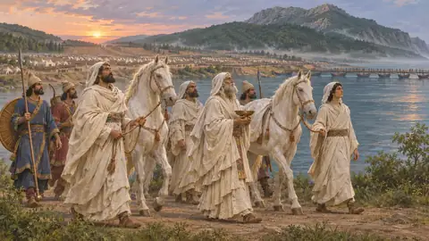
MagoslarRahipler, rüya yorumcuları ve taht için bir rakip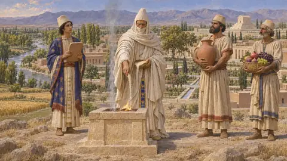
Lan sunusuKralın ambarları tanrıların giderini öder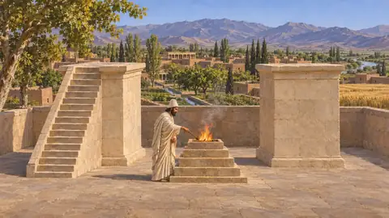
Ateş, sunaklar ve tapınak sorusuNe yanıyordu, nerede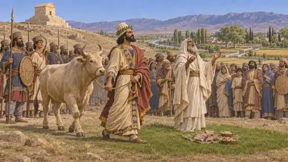
Bir Pers nasıl kurban keserdiHerodotos'un ayin tablosu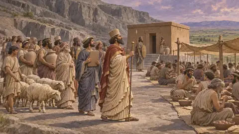
Elam'ın tanrılarıHumban, Napirisha, İnşuşinak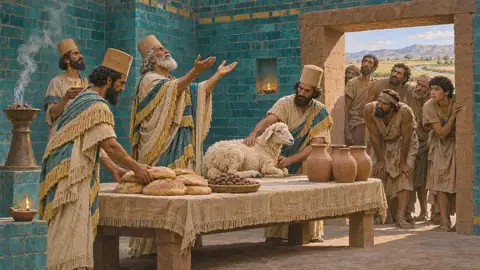
Marduk ve AkituPers kralları döneminde Babil'in tanrısı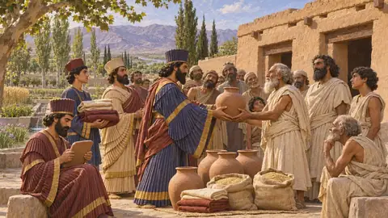
Pers yönetiminde Mısır tapınaklarıNeith, Apis, Hibis'teki Amon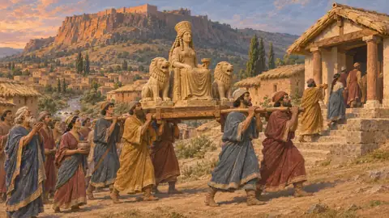
Yunan ve Lidya tanrılarıYakıldı, bağışlandı ve parası ödendi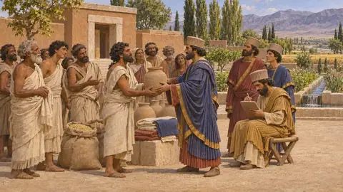
Kudüs'teki tapınakYeniden kurulan bir tapınak, kendi halkının sözleriyle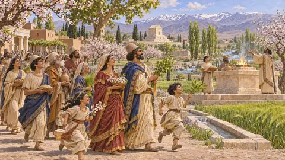
İlkbahar yılbaşıNevruz ve onun hakkında söyleyebileceklerimiz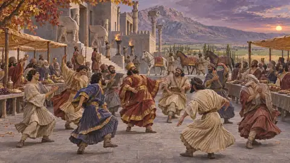
Mithra bayramıKralın sarhoş olabildiği tek gün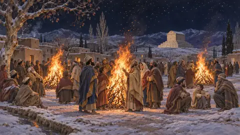
Sede ve TirganDaha sonraki bir İran'ın bayramları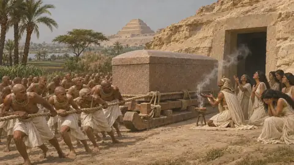
Açığa bırakma ve gömmeKuşlar, köpekler ve balmumuYaban hayatı ve hava koşulları 36
 Ceylanİran Platosu'nun ve Mısır çölü kenarının antilopu, MÖ 6.-5. yüzyıl
Ceylanİran Platosu'nun ve Mısır çölü kenarının antilopu, MÖ 6.-5. yüzyıl OnagerPers platosunun ve Mezopotamya ovalarının yaban eşeği, MÖ 6.-5. yüzyıllar
OnagerPers platosunun ve Mezopotamya ovalarının yaban eşeği, MÖ 6.-5. yüzyıllar Yaban keçisiZagros'un ve Pers dağlarının bezoar keçisi, MÖ 6.-5. yüzyıl
Yaban keçisiZagros'un ve Pers dağlarının bezoar keçisi, MÖ 6.-5. yüzyıl GeyikPers dünyasının ormanlarında ve av sahalarında geyikler, MÖ 6.-5. yüzyıl
GeyikPers dünyasının ormanlarında ve av sahalarında geyikler, MÖ 6.-5. yüzyıl Yaban domuzuAsya'da ve Yunanistan'da ormanlarda, kamışlıklarda ve tepelerde yaşayan yaban domuzu, MÖ 6.-5. yüzyıl
Yaban domuzuAsya'da ve Yunanistan'da ormanlarda, kamışlıklarda ve tepelerde yaşayan yaban domuzu, MÖ 6.-5. yüzyıl Nil timsahıMısır'ın nehir yırtıcısı, Herodotos'un gördüğü gibi bazı yerlerde kutsal sayılırdı, yaklaşık MÖ 450
Nil timsahıMısır'ın nehir yırtıcısı, Herodotos'un gördüğü gibi bazı yerlerde kutsal sayılırdı, yaklaşık MÖ 450 Bozkırın yabani atlarıİstros'un kuzeyindeki İskit bozkırlarında serbestçe dolaşan atlar, yaklaşık MÖ 513
Bozkırın yabani atlarıİstros'un kuzeyindeki İskit bozkırlarında serbestçe dolaşan atlar, yaklaşık MÖ 513 Ak leylekYakın Doğu'nun ve Mısır'ın göçmen bir su kuşu, MÖ 559-479
Ak leylekYakın Doğu'nun ve Mısır'ın göçmen bir su kuşu, MÖ 559-479 TavşanYunanistan'dan Mısır'a uzanan açık arazilerin küçük av hayvanları, MÖ 6.-5. yüzyıl
TavşanYunanistan'dan Mısır'a uzanan açık arazilerin küçük av hayvanları, MÖ 6.-5. yüzyıl TilkiAnadolu'da, Trakya'da ve Yunanistan'da kızıl tilki, MÖ 6.-5. yüzyıl
TilkiAnadolu'da, Trakya'da ve Yunanistan'da kızıl tilki, MÖ 6.-5. yüzyıl Altın çakalPersis'te, Elam'da ve Mısır'da açık arazide leş arayan bir köpekgil, MÖ 6.-5. yüzyıllar
Altın çakalPersis'te, Elam'da ve Mısır'da açık arazide leş arayan bir köpekgil, MÖ 6.-5. yüzyıllar KurtYunanistan'ın, Trakya'nın ve Medya'nın ormanlarında ve bozkırında yaşayan bozkurt, MÖ 6. ile 5. yüzyıl
KurtYunanistan'ın, Trakya'nın ve Medya'nın ormanlarında ve bozkırında yaşayan bozkurt, MÖ 6. ile 5. yüzyıl AslanPersis, Elam ve kuzey Yunanistan'ın büyük kedisi ile kraliyet av imgesi, MÖ 6.-5. yüzyıl
AslanPersis, Elam ve kuzey Yunanistan'ın büyük kedisi ile kraliyet av imgesi, MÖ 6.-5. yüzyıl Pers leoparıZagros'un ve yakın tepelerin leoparı, Pers topraklarının yabanıl bir kedisi, MÖ 6.-5. yüzyıl
Pers leoparıZagros'un ve yakın tepelerin leoparı, Pers topraklarının yabanıl bir kedisi, MÖ 6.-5. yüzyıl UrialPersis ve Medya tepelerinin yaban koyunu, MÖ 559-479
UrialPersis ve Medya tepelerinin yaban koyunu, MÖ 559-479 Mısır kazıMısır bataklıklarının ve sanatının Nil su kuşu, Memfis, yaklaşık MÖ 525
Mısır kazıMısır bataklıklarının ve sanatının Nil su kuşu, Memfis, yaklaşık MÖ 525 Yaban ördekleriİmparatorluğun nehirlerinde, bataklıklarında ve göllerinde yaşayan su kuşları, MÖ 559-479
Yaban ördekleriİmparatorluğun nehirlerinde, bataklıklarında ve göllerinde yaşayan su kuşları, MÖ 559-479 BalıkçılNil bataklığının ve Anadolu nehir ovalarının gri balıkçılı, MÖ 6. ile 5. yüzyıl
BalıkçılNil bataklığının ve Anadolu nehir ovalarının gri balıkçılı, MÖ 6. ile 5. yüzyıl KeklikPersis, Medya ve Attika'nın taşlı tepelerinin av kuşu, MÖ 6.-5. yüzyıl
KeklikPersis, Medya ve Attika'nın taşlı tepelerinin av kuşu, MÖ 6.-5. yüzyıl DevekuşuYakın Doğu bozkırının uçamayan iri kuşu; Ksenophon yaklaşık MÖ 401'de bildirir
DevekuşuYakın Doğu bozkırının uçamayan iri kuşu; Ksenophon yaklaşık MÖ 401'de bildirir Yaban öküzüAvrupa ve Asya'nın dev yabani öküzü; MS 1627'de nesli tükendi; Herodotos tarafından MÖ 480'de biliniyordu
Yaban öküzüAvrupa ve Asya'nın dev yabani öküzü; MS 1627'de nesli tükendi; Herodotos tarafından MÖ 480'de biliniyordu Su aygırıPers egemenliğindeki Mısır'da Nil'in nehir hayvanı, MÖ 6.-5. yüzyıllar
Su aygırıPers egemenliğindeki Mısır'da Nil'in nehir hayvanı, MÖ 6.-5. yüzyıllar Çaylakİmparatorluğun kasabaları ve ordugâhları üzerinde leş arayan yırtıcı bir kuş, MÖ 6.-5. yüzyıl
Çaylakİmparatorluğun kasabaları ve ordugâhları üzerinde leş arayan yırtıcı bir kuş, MÖ 6.-5. yüzyıl Kızıl akbabaKayalıkların ve açık arazinin iri leşçil kuşu; Yunanistan ve Pers toprakları, MÖ 6.-5. yüzyıl
Kızıl akbabaKayalıkların ve açık arazinin iri leşçil kuşu; Yunanistan ve Pers toprakları, MÖ 6.-5. yüzyıl Kaya güverciniPers imparatorluğu topraklarının yabani güvercini, Yunan yazarlarca bilinirdi, MÖ 6.-5. yüzyıl
Kaya güverciniPers imparatorluğu topraklarının yabani güvercini, Yunan yazarlarca bilinirdi, MÖ 6.-5. yüzyıl Küçük kargaPers ve Yunan topraklarının küçük, sürü yaşayan bir kargası, MÖ 559-479
Küçük kargaPers ve Yunan topraklarının küçük, sürü yaşayan bir kargası, MÖ 559-479 Ak balıkçılNil bataklıklarının ve kanallarının beyaz uzun bacaklı su kuşu, Pers egemenliğindeki Mısır, MÖ 525
Ak balıkçılNil bataklıklarının ve kanallarının beyaz uzun bacaklı su kuşu, Pers egemenliğindeki Mısır, MÖ 525 Kutsal ibisNil vadisinin Thoth'a adanmış su kuşu, Mısır, MÖ 525 ve sonrası
Kutsal ibisNil vadisinin Thoth'a adanmış su kuşu, Mısır, MÖ 525 ve sonrası TurnaPers İmparatorluğu'nda ve Yunan topraklarında görülen göçmen bir kuş, MÖ 6. ila 5. yüzyıl
TurnaPers İmparatorluğu'nda ve Yunan topraklarında görülen göçmen bir kuş, MÖ 6. ila 5. yüzyıl KırlangıçPers İmparatorluğu boyunca görülen göçmen bir kuş, MÖ 559-479
KırlangıçPers İmparatorluğu boyunca görülen göçmen bir kuş, MÖ 559-479 MartılarMÖ 490-479 seferlerinde Ege kıyılarındaki deniz kuşları
MartılarMÖ 490-479 seferlerinde Ege kıyılarındaki deniz kuşları YarasalarPers, Mısır ve Ege topraklarının küçük uçan memelileri, MÖ 559-479
YarasalarPers, Mısır ve Ege topraklarının küçük uçan memelileri, MÖ 559-479 KukumavAthene noctua, Athena'nın kuşu, Atina gümüş sikkelerinde, yaklaşık MÖ 500-479
KukumavAthene noctua, Athena'nın kuşu, Atina gümüş sikkelerinde, yaklaşık MÖ 500-479 Leş kargasıİmparatorluk topraklarında görülen, tarım arazilerinde ve kasabalarda leş arayan gri-siyah bir kuş, MÖ 559-479
Leş kargasıİmparatorluk topraklarında görülen, tarım arazilerinde ve kasabalarda leş arayan gri-siyah bir kuş, MÖ 559-479 Kum fırtınalarıMemfis ve Susa'da toz yüklü çöl rüzgârları ve Kambyses'in kayıp ordusu öyküsü, yaklaşık MÖ 525
Kum fırtınalarıMemfis ve Susa'da toz yüklü çöl rüzgârları ve Kambyses'in kayıp ordusu öyküsü, yaklaşık MÖ 525 Sabah sisiOyunda nehir ovalarının ve kıyıların manzarası; MÖ 559-479 için belgelenmiş bir olay değil
Sabah sisiOyunda nehir ovalarının ve kıyıların manzarası; MÖ 559-479 için belgelenmiş bir olay değil